Interní srovnání úprav podle připomínek p. Sládka z 18. 11. Táhni posuvníkem. U každého snímku zvol Beru / Vrátit originál / Upravit, dole zkopíruj výsledek do chatu. Celkem 62 snímků.
Reálné fotky – retuše 25
1dělal: Opus
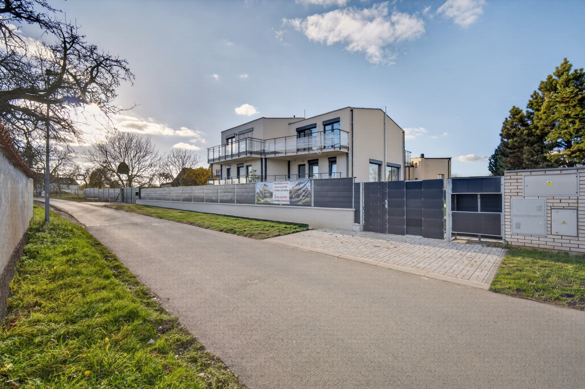
PŘEDPO
Proč: p. Sládek (formulář, fotky): „č1 – ano, vyretušovat křoví, Ivan to teď vytrhá“ · Franta 18. 11. (oprava): trávník i napravo od brány, realističtější tráva, bez nerovností u domu
Co se změnilo: pás mezi podezdívkou plotu a silnicí vlevo od brány → rovný, krátce sečený travnatý pás až k domu, bez nerovností a schodů u paty podezdívky (pata podezdívky rovná); travnatý cíp vpravo od brány pod pilířem s elektroměry → stejná upravená tráva až k hraně silnice; barva a zrno trávy srovnané se skutečnou trávou u cesty vlevo (realističtější než minule)
Výhrada: Tráva vpravo pod pilířem je o něco rovnoměrnější než přirozený pás u cesty vlevo. Spodních ~20 px bílé podezdívky mezi x 1000–1350 je převzato z generace (rovná pata) – bez viditelného švu.
3dělal: Opus
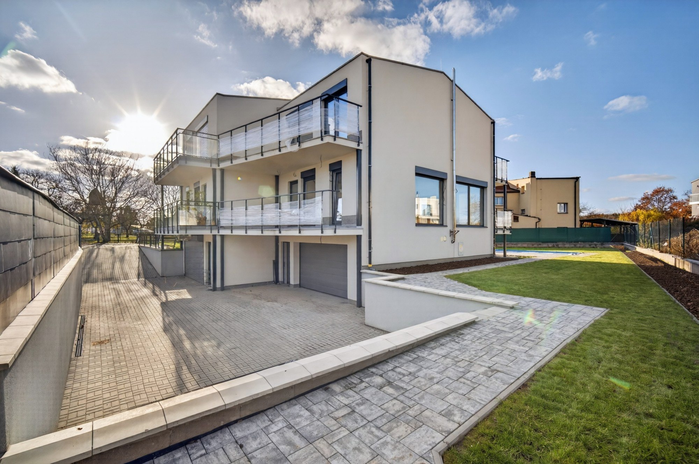
PŘEDPO
Proč: p. Sládek (formulář, fotky): „3 – ano, doplnit trávu?“ · Franta 18. 11. (oprava): vymazat kabel
Co se změnilo: auto vymazané (prázdný příjezd, dlažba dokreslená ve stejném vzoru); kabel pryč úplně (příjezd, dlažba, trávník); bordel před garáží pryč (hlína, listí, kbelík a košťata u bočních dveří); v mezeře mezi konci dvou opěrných zdí, kudy vedl kabel z průchodu na dlažbu, naznačené jednoduché betonové schůdky (světlé jako krycí desky zdí); tmavá kůra vlevo od malého chodníčku u domu a pás tmavé kůry podél opěrné zdi u pravého plotu; holá hlína vpravo dole → trávník (z minulé verze)
Výhrada: Schůdky jsou jen naznačené (v mezeře je vidět horní stupeň/podesta, zbytek je za nízkou zdí); generace u nich zároveň srovnala odlomený konec krycí desky vysoké zdi a konec nízké zdi. Dlažba příjezdu v místě auta a stín je domyšlený. Pás kůry u pravého plotu je nový záhon (v originále tráva až ke zdi), u paty zdi dosypaný kůrou z téže generace; spodní okraj zdi je z originálu. Malá rezavá skvrna u odvodňovacího žlabu vlevo zůstala (je i v originále). Zelený odlesk objektivu v trávníku zůstal (je i v originále).
7dělal: Sonnet
PŘEDPO
Proč: p. Sládek (formulář, fotky): „7 – Ivan vytrhá plevel a zasype to kůrou – všude, mimo trávu, 8–12 dtto“
Co se změnilo: záhony u domu a pruh u pravého plotu (hlína, plevel) → tmavá kůra
Výhrada: Kůra u pravého plotu je výrazně strukturovaná, mírně jiné zrno než okolí; drobné rostlinky v kůře vpravo; bez vymyšlených staveb.
8dělal: Opus
PŘEDPO
Proč: p. Sládek (formulář, fotky): „7 – Ivan vytrhá plevel a zasype to kůrou – všude, mimo trávu, 8–12 dtto“ · Franta 18. 11. (oprava): zasypat pořádně (trsy na rohu), smazat lahve na suterénním okně
Co se změnilo: záhon u domu zasypaný tmavou kůrou pořádně až do rohů (levý roh u zdi, pravý roh u dlažby, vyvýšený záhon vpravo) – bez trsů trávy; láhve a balení za sklem sklepního okna u dveří vymazané (prázdný parapet)
Výhrada: Z dvou zelených revizních krytek v záhonu je vidět jen jedna (druhou generace zasypala kůrou).
9dělal: Opus
PŘEDPO
Proč: p. Sládek (formulář, fotky): „7 – Ivan vytrhá plevel a zasype to kůrou – všude, mimo trávu, 8–12 dtto“ · Franta: „hromadu hlíny dej všude pryč“ (sjednocení sady)
Co se změnilo: záhony podél obou opěrných zdí a před trávníkem: plevel pryč, zasypáno tmavě hnědou mulčovací kůrou; hromada hlíny a suchá tráva za plotem vlevo → trávník
Výhrada: Za plotem vlevo je nový obsah (trávník a v dálce střechy/stromy sousedů), který si generace domyslela. Kůra je hrubší textury, než by byla v reálu na tuhle vzdálenost (v popředí velké kusy).
10dělal: Opus
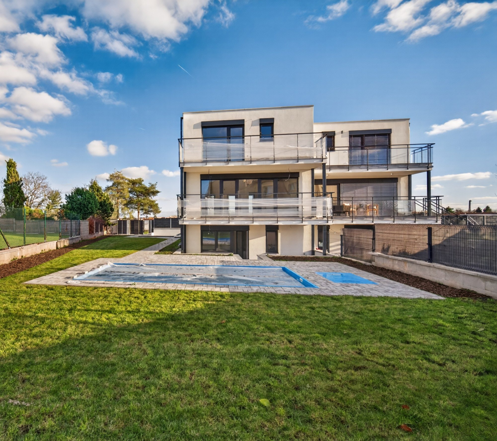
PŘEDPO
Proč: p. Sládek (formulář, fotky): „7 – Ivan vytrhá plevel a zasype to kůrou – všude, mimo trávu, 8–12 dtto“ · Franta: „hromadu hlíny dej všude pryč“ (sjednocení sady) · Franta 18. 11. (oprava): hrouda nad plotem → oříznout zleva o ~25 %, kůra podél plotu a chodníčku
Co se změnilo: OŘÍZNUTO zleva o 25 % (640 px, výsledek 1920×1704, ořez až po vložení, bezeztrátově) – pryč hrouda i dokreslování domu vlevo; za pletivem vlevo místo hromady rovný trávník (sloupky a vzpěra plotu z originálu); pás tmavé kůry podél celé paty levé opěrné zdi a podél pravé zdi až k domu (u chodníčku vpravo) dosypaný pořádně
Výhrada: Trávník za plotem je domyšlený (rovina u sousedů). Kůra u levé zdi je pás cca 1 m – záhon tam v originále nebyl, je to nový pás kůry podle připomínky.
11dělal: Opus
PŘEDPO
Proč: p. Sládek (formulář, fotky): „7 – Ivan vytrhá plevel a zasype to kůrou – všude, mimo trávu, 8–12 dtto“ · Franta: „hromadu hlíny dej všude pryč“ (sjednocení sady) · Franta 18. 11. (oprava): kůra i podél cestičky vpravo, plot a tráva ve správné perspektivě
Co se změnilo: plot vlevo celý z ORIGINÁLU (sloupky, vzpěry, patky – zámek po barvě); za ním místo hromady rovný trávník ve správné perspektivě (úzký pás za zdí, za ním vzdálené živé ploty, domy a stromy, žádná zelená stěna); záhon vpravo u bazénu zasypaný tmavou kůrou až k obrubníku (trsy přes obrubník pryč, obrubník čistý a rovný) i k domu; úzký záhon podél cestičky u domu tmavou kůrou
Výhrada: Výhled za plotem (rovný trávník souseda, vzdálené střechy a stromy) je domyšlený. Kůra v úzkém záhonu u cestičky je o odstín světlejší a v rozích zůstalo pár drobných lístků.
12dělal: Opus
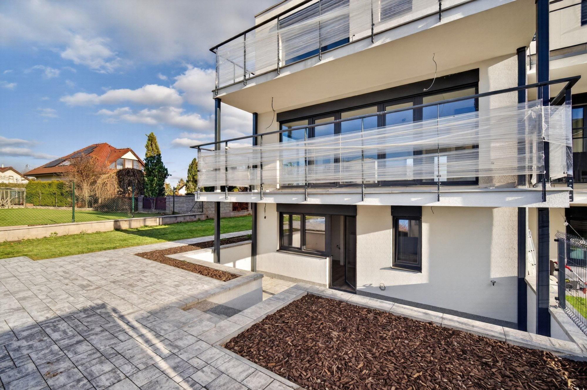
PŘEDPO
Proč: p. Sládek (formulář, fotky): „7 – Ivan vytrhá plevel a zasype to kůrou – všude, mimo trávu, 8–12 dtto“ · Franta: „hromadu hlíny dej všude pryč“ (sjednocení sady) · Franta 18. 11. (oprava): kůra i u L cestičky, plot rovně
Co se změnilo: plot vlevo (sloupky) z ORIGINÁLU – rovné, bez křivé generace; místo hromady za plotem trávník; záhon u domu vpravo dole tmavou kůrou; i L-záhon podél cestičky u domu vysypaný tmavou kůrou celý (bez plevele)
Výhrada: Trávník a domy za plotem jsou domyšlené (generace). V pletivu těsně u pravého sloupku je pletivo z generace (vzor lehce jiný než originál).
13dělal: Opus
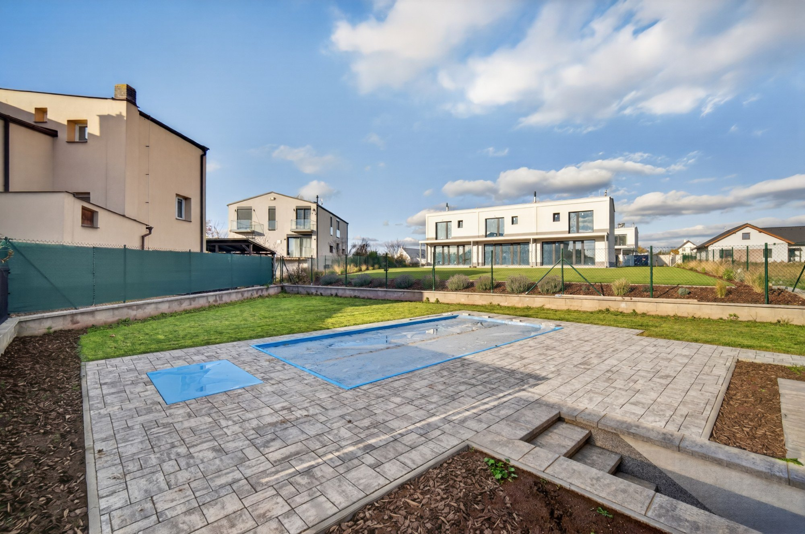
PŘEDPO
Proč: p. Sládek (formulář, fotky): „13 – odstranit hromadu“ · Franta 18. 11. (oprava): zahrada jako u druhého domu
Co se změnilo: sousední pozemek za plotem (hromada hlíny) → hotová zahrada bílého domu ve stylu schválených 7, 9 a kolo6: rovný sečený trávník, podél plotu pás tmavé kůry s levandulemi a okrasnými travami; dokreslené přízemí bílého domu (okna); plot (sloupky, vzpěry) a opěrná zeď z originálu; naše záhony kůrou jako dřív
Výhrada: Celá zahrada za plotem je domyšlená (sousedův pozemek): přízemí bílého domu, vpravo nový přízemní dům s šedou střechou a sousedův boční plot, keře v kůře. Bez bazénu a cest.
48dělal: GPT-6 (Astra)
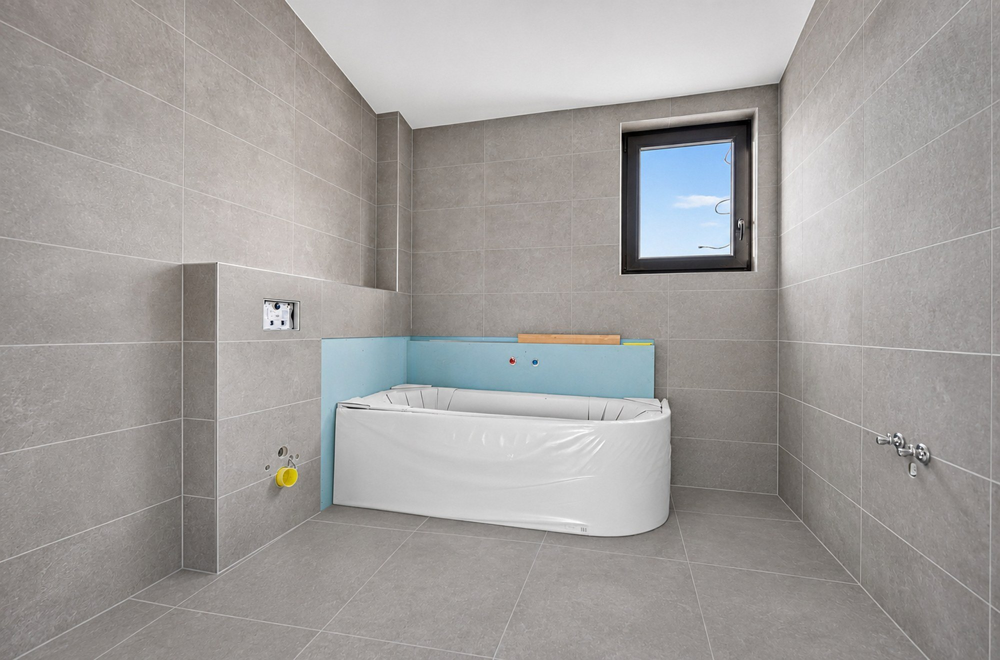
PŘEDPO
Proč: p. Sládek (formulář, fotky): „48–49 Ivan lépe uklidí“ · Franta: „vyretušuj ty krabice, trošku to tam zesvětli, ať to vypadá víc profi“ · Franta 18. 11. (oprava): smazat vše kromě vany → vzata verze z ChatGPT
Co se změnilo: krabice a všechny volné věci pryč, zůstala jen vana a pevná sanita; zesvětleno
Výhrada: celý obraz je generovaný (ne vložený do originálu) – zkontrolovat obklad a armatury proti originálu
49dělal: GPT-6 (Astra)
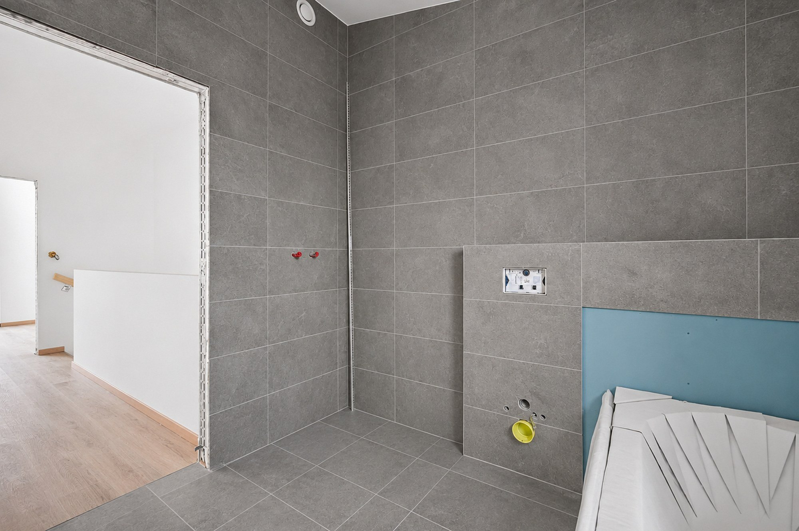
PŘEDPO
Proč: p. Sládek (formulář, fotky): „48–49 Ivan lépe uklidí“ · Franta: „vyretušuj ty krabice, trošku to tam zesvětli, ať to vypadá víc profi“ · Franta 18. 11. (oprava): smazat vše kromě vany → vzata verze z ChatGPT
Co se změnilo: krabice a všechny volné věci pryč, zůstala jen vana a pevná sanita; zesvětleno
Výhrada: celý obraz je generovaný (ne vložený do originálu) – zkontrolovat obklad a armatury proti originálu
54dělal: Opus
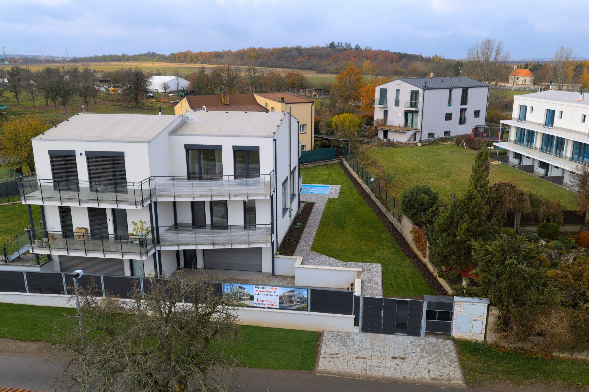
PŘEDPO
Proč: p. Sládek (formulář, fotky): „54 – A s retušemi záhonů, bordelu před plotem a hromady (ta se mi zdá nejlépe použitelná)“ · Franta 18. 11. (oprava): hromada na vedlejším pozemku, zelenější trávník před domem
Co se změnilo: pás u silnice: souvislý trávník po celé délce až k asfaltu, i pod a za stromem, plevel a páska u zdi pryč; podél plotu na naší straně pás tmavé kůry; nedozelená plocha za brankou dozeleněna; kabel a zásuvková skříň před garáží a kabel přes zídku pryč (zeď po kabelu čistá); zbytek hromady, palety a prkna před terasami CDE → trávník (+ dřívější: hromada u sousedů → trávník, záhon u domu kůra)
Výhrada: Trávník u sousedů a pás u silnice je domyšlený obsah. Pod korunou stromu je tráva z generace a větve z originálu – při zvětšení místy měkký přechod. Na zdi za plotem u x≈7345, y≈5790 zůstala drobná tmavá čárka (~15 px) po konci kabelu. Pod stříškou u pilíře zůstaly z originálu tvárnice a paleta.
55dělal: Opus
PŘEDPO
Proč: p. Sládek (formulář, fotky): „55, 56, 57, 58, 59 – A dtto“ (= retuše záhonů, bordelu před plotem a hromady) · Franta 18. 11. (oprava): tráva před domem i za stromem
Co se změnilo: pás u silnice: souvislý trávník po celé délce až k asfaltu, i pod a za stromem; podél plotu na naší straně pás tmavé kůry, trávník na zahradě dozeleněn; kabel přes zídku a dlažbu před garáží pryč (+ dřívější: hromada u sousedů → trávník, záhon u domu kůra)
Výhrada: Pod korunou stromu tráva z generace, větve z originálu (měkký přechod při zvětšení). Kůra je o něco tmavší než na fotkách ze země.
56dělal: Opus
PŘEDPO
Proč: p. Sládek (formulář, fotky): „55, 56, 57, 58, 59 – A dtto“ (= retuše záhonů, bordelu před plotem a hromady) · Franta 18. 11. (oprava): tráva před domem, hlavně za stromem
Co se změnilo: pás u silnice: souvislý trávník po celé délce až k asfaltu, i pod a za stromem, plevel u zdi pryč; podél plotu na naší straně pás tmavé kůry; trávník na zahradě sjednocený, souvislý zelený (plot a sloupky z originálu); kabely, listí a skvrny na dlažbě před garáží pryč (+ dřívější: hromada a svah u sousedů → trávník, záhon u domu kůra)
Výhrada: Zásuvka u paty zdi před garáží zůstala (je to pevná součást), kabel z ní je pryč. Pod stromem u silnice tráva z generace, větve z originálu (měkký přechod při zvětšení). Trávník na zahradě je převzatý z generace jen uvnitř (plot NB posunul – plot i pás u plotu z originálu).
57dělal: Opus
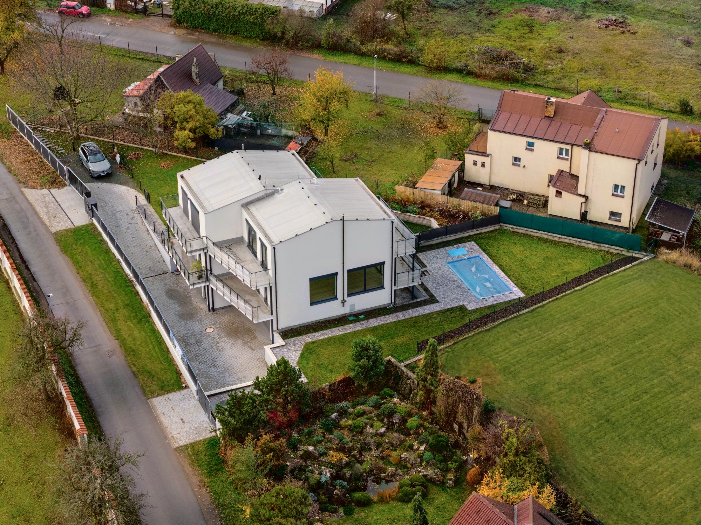
PŘEDPO
Proč: p. Sládek (formulář, fotky): „55, 56, 57, 58, 59 – A dtto“ (= retuše záhonů, bordelu před plotem a hromady)
Co se změnilo: podél plotu na naší straně pás tmavé kůry po celé délce; kabel na dlažbě před domem pryč (+ dřívější: hromada a rumiště u sousedů → trávník, pás u silnice → tráva)
Výhrada: Trávník u sousedů domyšlený (rovný, bez valu).
58dělal: Opus
PŘEDPO
Proč: p. Sládek (formulář, fotky): „55, 56, 57, 58, 59 – A dtto“ (= retuše záhonů, bordelu před plotem a hromady) · Franta 18. 11. (oprava): tráva za stromem, bordel u CDE pryč
Co se změnilo: pás u silnice: souvislý trávník po celé délce až k asfaltu, i pod a za stromem; bordel u CDE (prkna, palety, IBC nádrž, balíky, vana, hlína před terasami) → trávník (+ dřívější: val u sousedů → trávník, záhon kůra)
Výhrada: Trávník u CDE a pás u silnice jsou domyšlený obsah; val vlevo od CDE a jehličnan z originálu. V trávníku u sousedů pár drobných tmavých skvrn z dřívější generace.
59dělal: Sonnet
PŘEDPO
Proč: p. Sládek (formulář, fotky): „55, 56, 57, 58, 59 – A dtto“ (= retuše záhonů, bordelu před plotem a hromady) · Franta 18. 11. (oprava): tráva za stromem, bordel u CDE pryč
Co se změnilo: hromada hlíny, suchý svah a stavební materiál u sousedů → zelený trávník; neupravený pás mezi zdí a silnicí → posekaná tráva
Výhrada: Domyšlený plochý trávník s jemnými pruhy po sekání místo valu; sousedův materiál a suchý svah vpravo nahoře ponechány. Pás u silnice upraven jen v pravé části (vlevo zůstal plevel a páska), na hraně vozovky pruh původní hlíny.
68dělal: Opus
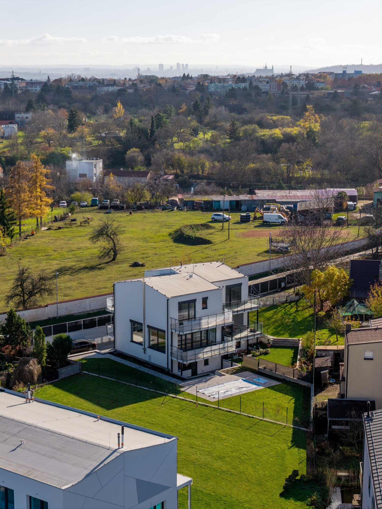
PŘEDPO
Proč: p. Sládek (formulář, fotky): „68, 69, 71–76 – A s retušemi bordelu a hromady“ · Franta 18. 11. (oprava): lépe vymaskovat dům CDE vpravo a plot mezi CDE a B
Co se změnilo: hromada, suchá tráva a materiál u CDE → trávník; dům CDE (atika, stěna, stříška terasy, sloupek) a plot mezi CDE a B z originálu s ostrou hranou (zámky změřené 1:1); horní levá hrana: pata plotu doplněná generací místo nahrnuté hromady, nad ní plot a zahrada B z originálu
Výhrada: Pod stříškou terasy CDE je tráva (dlažbu, kterou NB vymyslel, přebírá tráva z téže generace). Pata plotu vlevo nahoře je domyšlená (v originále ji kryla hromada).
69dělal: Opus
PŘEDPO
Proč: p. Sládek (formulář, fotky): „68, 69, 71–76 – A s retušemi bordelu a hromady“ · Franta 18. 11. (oprava): lépe vymaskovat dům CDE vpravo a plot mezi CDE a B
Co se změnilo: hromada, materiál a plevel u CDE → trávník; dům CDE, obě stříšky teras a sloupky z originálu s ostrou hranou; horní levá hrana: trávník až k patě plotu B / živému plotu, bez zbytku hromady
Výhrada: Vlevo nahoře NB dokreslil nízkou kamennou zídku pokračující od existující zídky (tenké světlé linie v trávníku) – domyšlené. Strom/živý plot, který NB vymyslel vlevo nahoře, nahrazen trávou z téže generace.
71dělal: Sonnet
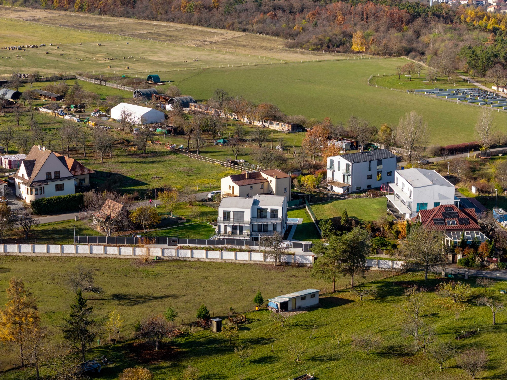
PŘEDPO
Proč: p. Sládek (formulář, fotky): „68, 69, 71–76 – A s retušemi bordelu a hromady“
Co se změnilo: hromady hlíny, plevel a stavební materiál na sousedním svahu → zelený trávník
Výhrada: Domyšlený plochý trávník místo svahu; horní hrana trávníku k sousedovu dřevu a dřevěné stavbě je mírně zvlněná; materiál sousedů nahoře ponechán.
72dělal: Sonnet
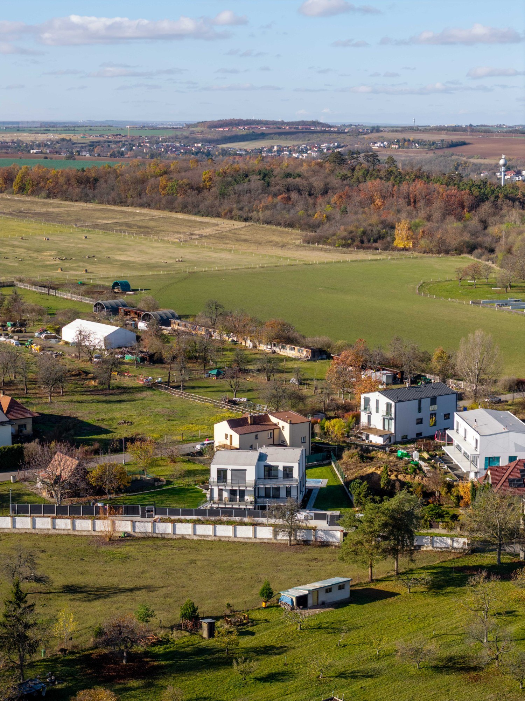
PŘEDPO
Proč: p. Sládek (formulář, fotky): „68, 69, 71–76 – A s retušemi bordelu a hromady“
Co se změnilo: hromady hlíny a stavební materiál na sousedním svahu → zelený trávník
Výhrada: Domyšlený trávník místo svahu; vlevo zůstal pruh původního suchého plevele, horní hrana trávníku zvlněná; materiál sousedů nahoře ponechán.
73dělal: Sonnet
PŘEDPO
Proč: p. Sládek (formulář, fotky): „68, 69, 71–76 – A s retušemi bordelu a hromady“
Co se změnilo: hromada hlíny a rumiště za oplocením sousedů → zelený trávník (malé dvě plochy)
Výhrada: Domyšlený obsah: trávník s nízkou kamennou zídkou a tmavým valem v hloubce; plochy jsou drobné a daleko, tvar trávníku působí mírně uměle.
74dělal: Sonnet
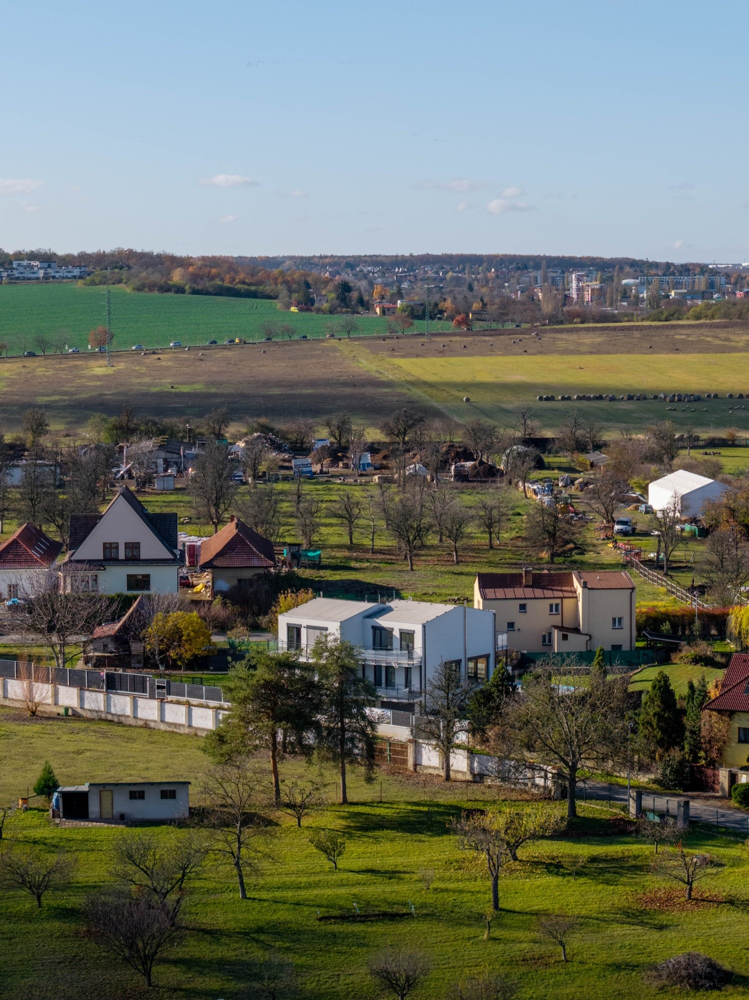
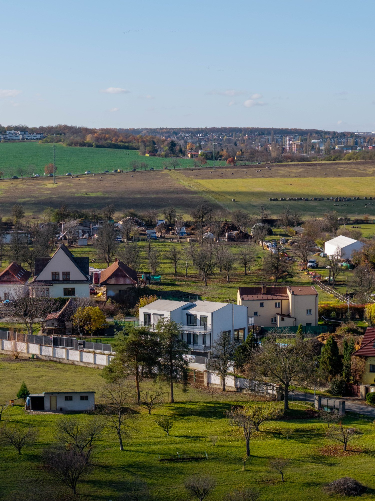
PŘEDPO
Proč: p. Sládek (formulář, fotky): „68, 69, 71–76 – A s retušemi bordelu a hromady“
Co se změnilo: hromada hlíny a suchý svah za sousedním plotem → zelený trávník
Výhrada: Domyšlený trávník s jemnými vlnitými pruhy po sekání, vlevo nepřirozeně zaoblený okraj trávníku jako obrubník; po stranách tvrdší přechod do původního plevele.
75dělal: Opus
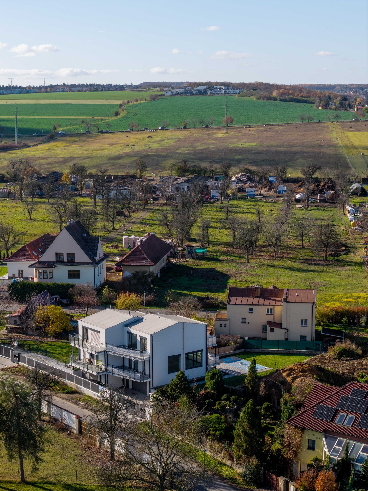
PŘEDPO
Proč: p. Sládek (formulář, fotky): „68, 69, 71–76 – A s retušemi bordelu a hromady“ · Franta 18. 11. (oprava): trávník před domem, pasáž u zahrad CDE
Co se změnilo: pás u silnice: souvislý trávník po celé délce až k asfaltu, i pod stromy; hromada, hroudy, suchý svah, trs suché trávy u zahrad CDE i suchý keř dole u střechy → trávník až k plotu, zahradám a střeše
Výhrada: Trávník u CDE domyšlený. Smuteční strom a keře vlevo dole a pruh stínu u střechy z originálu. Úplně vpravo u okraje fotky (za tújí, kterou NB vymyslel – zamčeno) zůstal úzký pruh původního svahu.
76dělal: Opus
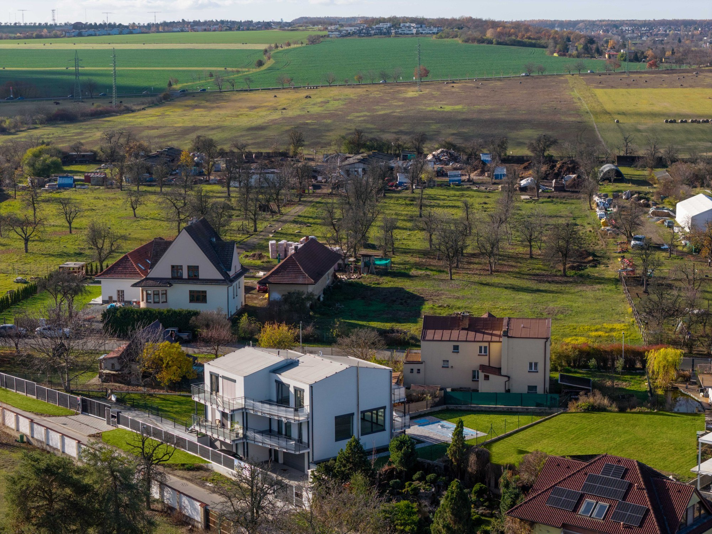
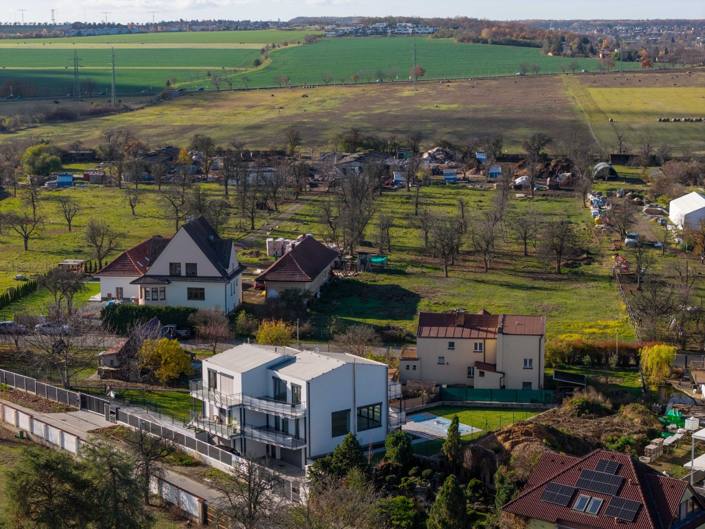
PŘEDPO
Proč: p. Sládek (formulář, fotky): „68, 69, 71–76 – A s retušemi bordelu a hromady“ · Franta 18. 11. (oprava): trávník před domem, pasáž u zahrad CDE, bordel pryč
Co se změnilo: oba pásy u silnice: souvislý trávník až k asfaltu i pod stromy; hromada, suchý svah a bordel u CDE (prkna, palety, balíky, IBC) → trávník, plot a zahrady CDE, stříška terasy z originálu
Výhrada: Pod keři u střechy vlevo dole je přechod trávníku do stínu (NB tam vymyslel túje – nahrazeno trávou z téže generace). Trávník u CDE domyšlený.
Test: stejné retuše v ChatGPT (pro srovnání) 11
1 ChatGPT test dělal: GPT-6 (Astra)
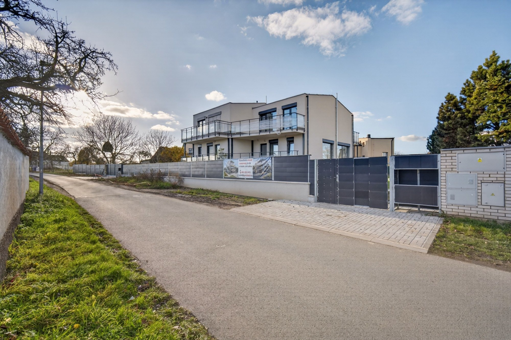
PŘEDPO
Proč: Franta: test – stejné zadání v ChatGPT pro srovnání s naší metodou
Co se změnilo: Pás mezi bílou podezdívkou plotu a silnicí (suché keře, plevel, hlína, klacky) nahrazen posekaným travnatým pásem.
Výhrada: Záběr neposunut (balkon, plot, brána sedí, odhad do ~3 px). Stavba, ploty, brána, dlažba a nebe beze změny, žádné vymyšlené objekty. Vady: světlejší/zelenější a čistě rovný pás trávy vypadá uměle, jemné detaily vzdálených stromů a keřů zjednodušené a méně syté (teplé listí zmatnělo), celkově mírně měkčí obraz. Rozlišení výstupu 1537x1023 px.
3 ChatGPT test dělal: GPT-6 (Astra)
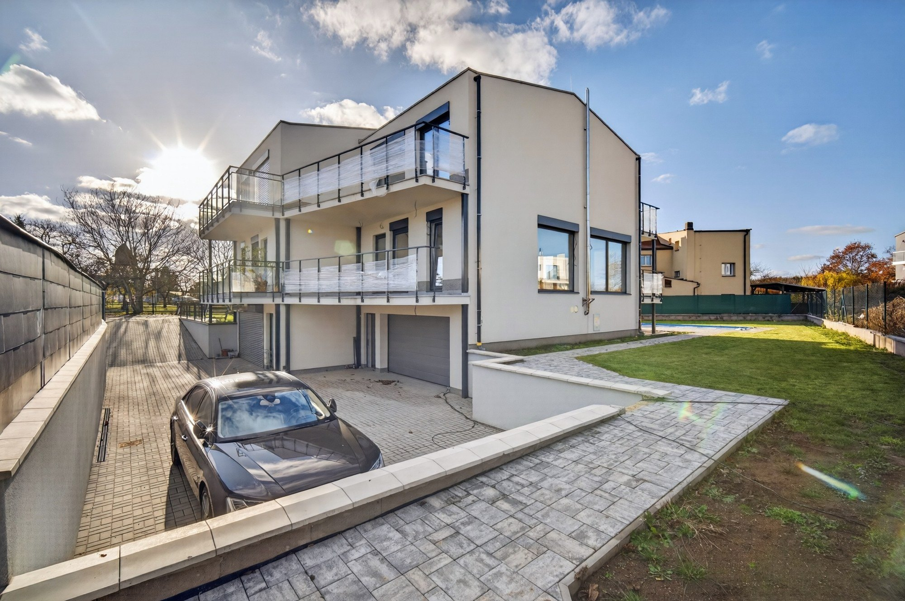
PŘEDPO
Proč: Franta: test – stejné zadání v ChatGPT pro srovnání s naší metodou
Co se změnilo: Holá hlína s plevelem vpravo dole mezi chodníkem a trávníkem nahrazena souvislým trávníkem.
Výhrada: Záběr neposunut (dům, auto, balkony sedí, odhad do ~3 px). Změna odpovídá zadání, žádný vymyšlený objekt v ploše. Vady: nový trávník je světlejší a sytější než zbytek, na pravém okraji záběru se objevil malý bílý útvar a změněná linie plotu u bazénu (drobné vymyšlené detaily), jemné detaily vzdálené zástavby a stromů zjednodušené, obraz o něco měkčí. Rozlišení výstupu 1539x1022 px.
7 ChatGPT test dělal: GPT-6 (Astra)
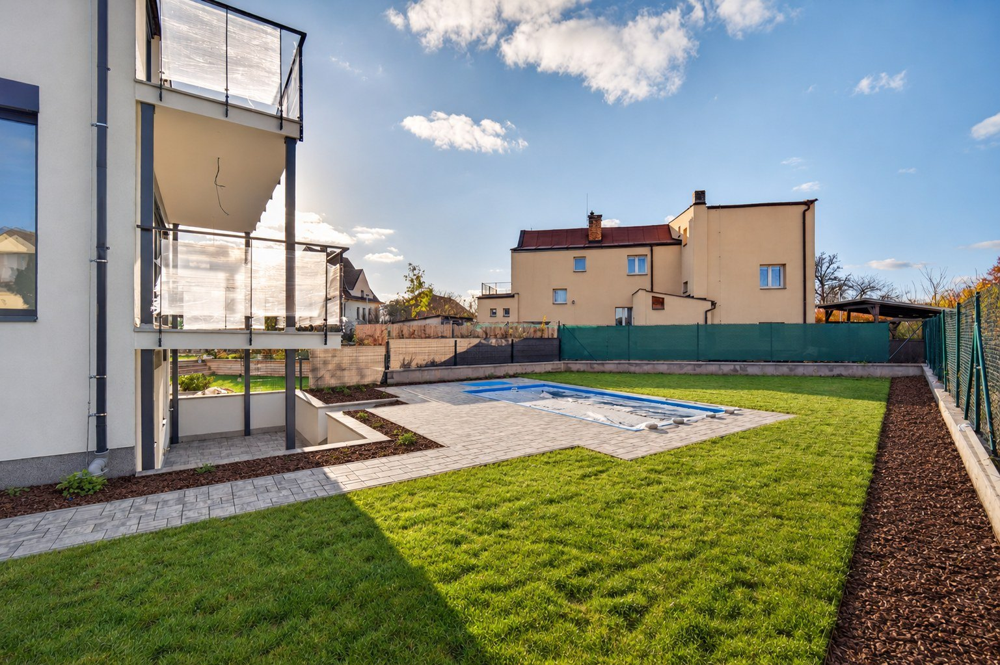
PŘEDPO
Proč: Franta: test – stejné zadání v ChatGPT pro srovnání s naší metodou
Co se změnilo: Záhony u domu a pruh u pravého plotu (hlína, plevel) zasypány tmavě hnědou kůrou.
Výhrada: Záběr neposunut (dům, sousední dům, bazén sedí, odhad do ~3 px). Vady: kromě záhonů ChatGPT přegeneroval i trávník (jiná textura, zmizely holé plochy a stín na pravém pruhu – změna mimo zadání), pruh u plotu je jednolitá tmavá kůra bez okrajů, drobné zjednodušení vzdálených stromů a bazénové fólie; žádný vymyšlený velký objekt. ChatGPT u této fotky nabídl 2 varianty (A/B), vzata varianta 1. Rozlišení výstupu 1537x1023 px.
9 ChatGPT test dělal: GPT-6 (Astra)
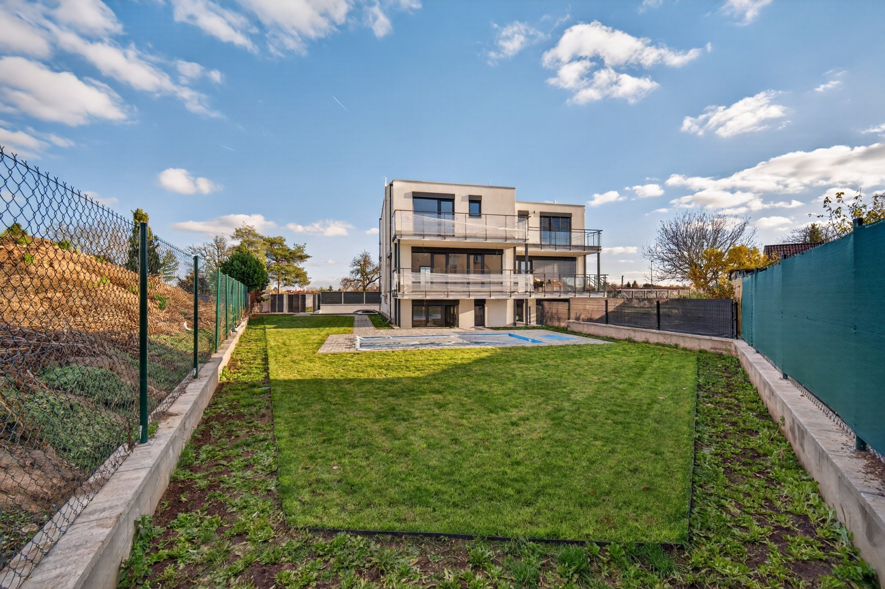
PŘEDPO
Proč: Franta: test – stejné zadání v ChatGPT pro srovnání s naší metodou
Co se změnilo: Záhony podél obou opěrných zdí a před trávníkem zbaveny plevele a zasypány tmavě hnědou kůrou; hromada hlíny a suchá tráva za plotem vlevo nahrazeny rovným trávníkem.
Výhrada: Záběr neposunut (dům, bazén, ploty sedí, odhad do ~3 px). Změny odpovídají zadání, žádný velký vymyšlený objekt. Vady: za plotem vlevo ChatGPT vymyslel vzdálené jehličnany a rovný obzor (originál tam měl svah), kůra tvoří souvislý hladký pás (mimo okraje trávníku se stírá hranice, zmizely původní drobné rostliny v záhonech), obraz o něco měkčí, jemné detaily dálky (stromy vpravo, střechy) zjednodušené. Rozlišení výstupu 1537x1023 px.
13 ChatGPT test dělal: GPT-6 (Astra)
PŘEDPO
Proč: Franta: test – stejné zadání v ChatGPT pro srovnání s naší metodou
Co se změnilo: Hromada hlíny za plotem nahrazena rovným trávníkem; záhony vlevo, vpředu a vpravo zasypány tmavě hnědou kůrou (původní malé rostliny ponechány).
Výhrada: Záběr neposunut (domy, bazén, schody sedí, odhad do ~3 px). Vady: za plotem vpravo ChatGPT vymyslel řadu podzimních stromů a rovný obzor (originál: hromada, za ní nic), rostlinky v záhonech mírně přerovnané/domalované (nejsou přesně původní), pletivo plotu přes nový trávník jemnější, celkově měkčí obraz; stavby, ploty a dlažba zachovány. Rozlišení výstupu 1539x1022 px.
48 ChatGPT test dělal: GPT-6 (Astra)
PŘEDPO
Proč: Franta: test – stejné zadání v ChatGPT pro srovnání s naší metodou (koupelny jdou do finálu, pokud projdou)
Co se změnilo: ChatGPT odstranil krabice, role, sáčky a materiál z podlahy a stěny, doplnil dlažbu a lehce zesvětlil celou fotku (prompt Frantův: +0,3 EV).
Výhrada: PROŠLO – kandidát do finálu. Spáry podlahy i stěn rovné a navazující, vana s fólií, modrá deska, výstupy vody i žlutá záslepka na místě; záběr neposunut (odhad do ~3 px, okno/vana/strop sedí). Drobné vady: zmizel tenký podlahový žlab/odtok vlevo dole (v originálu byl pod krabicí – ChatGPT ho vymazal), zmizel sluneční přechod na levé stěně (plošší světlo), textura dlaždic mírně vyhlazená; výstup jen 1543 px široký (60 % originálu 2560). Rozlišení výstupu 1543x1019 px.
49 ChatGPT test dělal: GPT-6 (Astra)
PŘEDPO
Proč: Franta: test – stejné zadání v ChatGPT pro srovnání s naší metodou (koupelny jdou do finálu, pokud projdou)
Co se změnilo: ChatGPT odstranil krabice, kartony a obaly z podlahy u rohu, doplnil dlažbu a lehce zesvětlil fotku (Frantův prompt, +0,3 EV; věta o neměnění vpravo od levého okraje vany).
Výhrada: PROŠLO – kandidát do finálu. Spáry podlahy a stěn rovné a navazující, vana s fólií, modrá deska, výstup a žlutá záslepka na místě, dveřní otvor, dřevěná podlaha a lišta beze změny; záběr neposunut (vizuálně shodný). Drobné vady: celá fotka světlejší, textura dlaždic mírně vyhlazená a doplněná dlažba v rohu je čistší než okolí; výstup jen 1537 px široký (60 % originálu 2560). Rozlišení výstupu 1537x1023 px.
54 ChatGPT test dělal: GPT-6 (Astra)
PŘEDPO
Proč: Franta: test – stejné zadání v ChatGPT pro srovnání s naší metodou
Co se změnilo: Hromada hlíny, suchá tráva a stavební materiál na sousedním pozemku nahrazeny posekaným trávníkem; záhon u domu vpravo zasypán kůrou; pás u silnice (páska, hlína, plevel) nahrazen travnatým pásem.
Výhrada: Záběr neposunut (dům, plot, sousední domy sedí, odhad do ~4 px). Všechny 3 změny provedeny, bazén ani cesta nepřidány. Vady: jehličnany a keře v popředí vpravo PŘEKRESLENY (jiný tvar, vznikl vysoký sloupovitý jehličnan), vpravo za plotem přibyl živý plot/keře, zmizela červená konstrukce u sousedního domu, nový trávník je jednolitý a sytější, jemné detaily větví a drobné stavby v dálce zjednodušené. Výstup má jen 1536 px (originál 12288 px = 12 %) – pro dron prakticky nepoužitelné bez AI upscalu. Rozlišení výstupu 1536x1024 px.
56 ChatGPT test dělal: GPT-6 (Astra)
PŘEDPO
Proč: Franta: test – stejné zadání v ChatGPT pro srovnání s naší metodou
Co se změnilo: Hromada hlíny a suchá tráva na sousedním pozemku nahrazeny rovným trávníkem; záhony u domu a nepořádek před plotem u silnice nahrazeny kůrou / travnatým pásem.
Výhrada: Záběr neposunut (dům, sousední dům, bazén sedí, odhad do ~5 px). Všechny změny provedeny, bez vymyšleného bazénu/cesty. Vady: překreslené okno na pravé stěně domu (jiný odlesk, zelenavé sklo), skalka a jehličnany vpravo dole přetvořeny (jiné tvary rostlin), změněná plachta bazénu, hladší textura střech a trávy; výstup jen 1448x1086 px (originál 8056 px = 18 %) – pro dron málo. Rozlišení výstupu 1448x1086 px.
68 ChatGPT test dělal: GPT-6 (Astra)
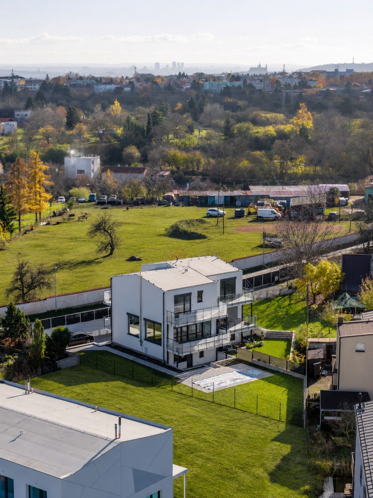
PŘEDPO
Proč: Franta: test – stejné zadání v ChatGPT pro srovnání s naší metodou
Co se změnilo: Hromada hlíny, suchá tráva a stavební materiál (palety, IBC nádrž, zelené balíky, prkna) na sousedním pozemku za domem nahrazeny rovným posekaným trávníkem.
Výhrada: Záběr neposunut (dům, střecha, sousední stavby sedí, odhad do ~4 px), změna přesně dle zadání, bazén/cesta/objekty nepřidány. Vady: ostrůvek keřů a kamenů vlevo dole u střechy zmizel (i mimo hromadu), plot pozemku a stíny v trávníku vypadají přegenerované (jiná struktura), bazén a jeho okolí mírně změněné, vzdálená auta/dílna a keře v pozadí zjednodušené; celkově měkčí obraz; výstup jen 1086x1448 px (originál 8056 px na výšku = 18 %). Rozlišení výstupu 1086x1448 px.
73 ChatGPT test dělal: GPT-6 (Astra)
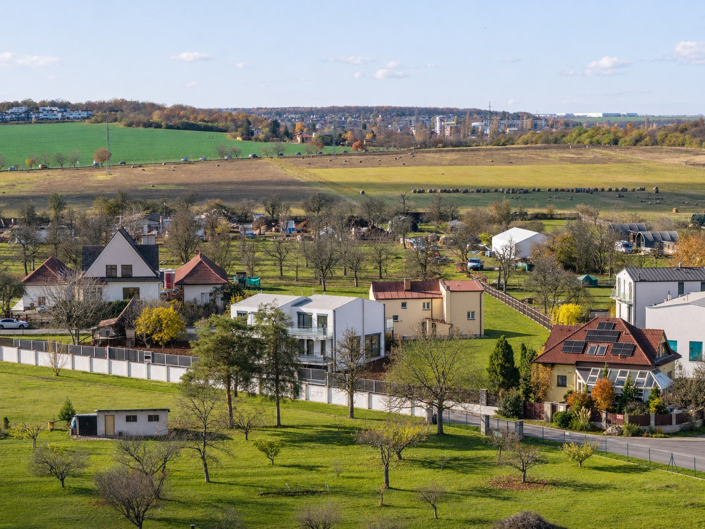
PŘEDPO
Proč: Franta: test – stejné zadání v ChatGPT pro srovnání s naší metodou
Co se změnilo: Zadání (hromada/hlína u sousedů, záhony, pás před plotem) na této širší fotce působí jen drobně: ChatGPT vyčistil hnědé plochy a nepořádek v zahradách sousedů a sjednotil trávu.
Výhrada: Záběr neposunut (domy, plot, silnice sedí, odhad do ~5 px), žádné velké vymyšlené objekty. Vady: stromy a ovocné stromky v popředí PŘEKRESLENY (jiné větvení a rozmístění), drobná zástavba, auta a kůlny v pozadí zjednodušené/posunuté o několik px, tráva sytější a hladší; změna oproti originálu je nízká a těžko čitelná, takže výsledek nelze považovat za jednoznačně splněné zadání. Výstup jen 1448x1086 px (originál 6313 px = 23 %). Rozlišení výstupu 1448x1086 px.
Exteriérové vizualizace 6
P1194788 Zahrada s bazénem dělal: Opus
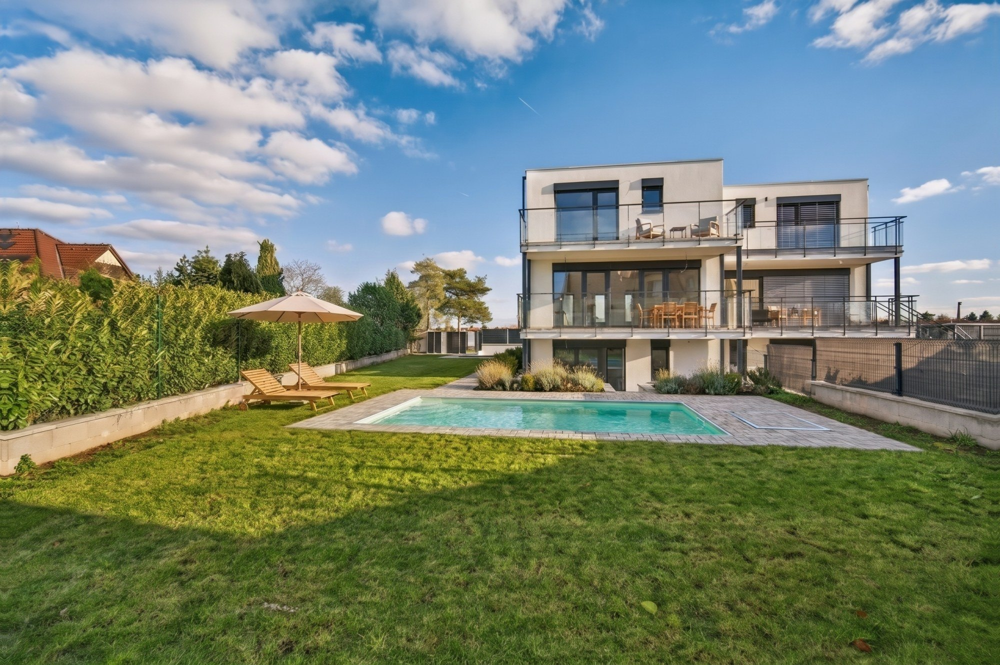
PŘEDPO
Proč: p. Sládek (formulář): „Určitě vylepšit trávu a okolo plotů výsadbu, jinak je to hrozně strohé a vpravo nějaký živý plot...“ · do telefonu Frantovi: rostliny / záhony po stranách pozemku u plotů · Franta 18. 11. (oprava): pruhy kůry s okrasnými záhony po stranách u plotů místo nových záhonů
Co se změnilo: OPRAVA 18. 11. večer (Franta: „nejsou tam ty pruhy s kůrou po stranách s okrasnými záhony, ale jsou tam přidělané nové“): zrušeny vymyšlené záhony a živý plot před pravou zídkou z předchozí verze. Nově jen dva úzké pruhy tmavé kůry (cca 0,7–0,9 m) s kovovým obrubníkem podél paty obou opěrných zídek po stranách pozemku, v nich jedna řada nízké výsadby (levandule, nízké okrasné trávy, buxusové koule, šanta/šalvěj) – stejný styl jako na schváleném P1194790; líc zídek nad rostlinami zůstává vidět, za lehátky pruh pokračuje až na konec zídky. Hustý zelený trávník bez holých míst a listí (světlo i stín domu ze schválené verze). Postup: poloha pruhů změřena v perspektivě fotky (homografie z bazénu 3×6 m), vyznačena do kola 4 jako vodítko, 1 generace NB Pro 2K Unlimited z kola 4 (2. pokus; 1. zamítnut – záhony 2 m široké), zarovnání 0,83 px, vloženo jen pod horní hranou obou zídek + rostliny přesahující hranu levé zídky; dlažba, bazén, poklop, lehátka, slunečník, záhony u domu, zídky, plot, živý plot, dům a nebe zamčené z kola 4 (bezeztrátově po blocích JPEG, mimo masku rozdíl 0).
Výhrada: Za kovovým plotem vpravo NENÍ živý plot (generace ho přidala, ale je nad hranou zídky – nepřevzat; Sládek chtěl „vpravo nějaký živý plot“ – pokud ho Franta chce, je potřeba zvláštní rozhodnutí). Trávník: drobné fleky z generace zjemněny a 3 spadané listy a 2 holá místa zakryty trávou z okolí. Pruh za lehátky je úzký a z větší části zakrytý lehátky. Předchozí verze zálohována v viz/kolo6/_v1_pred_opravou/.
P1194788_vecer Zahrada s bazénem – večer dělal: Opus
PŘEDPO
Proč: Náš návrh: stejná výsadba jako na denní verzi (Sládek: „Určitě vylepšit trávu a okolo plotů výsadbu, jinak je to hrozně strohé a vpravo nějaký živý plot...“), ať den a večer sedí · Franta 18. 11. (oprava): pruhy kůry s okrasnými záhony po stranách u plotů místo nových záhonů
Co se změnilo: OPRAVA 18. 11. večer: stejná zahrada jako nová denní 0788 – jen úzké pruhy kůry s kovovým obrubníkem a nízkou výsadbou podél obou opěrných zídek, trávník hustý bez holých míst; vymyšlený živý plot a záhony z předchozí verze pryč. 1 generace NB Pro 2K Unlimited z večerní verze kola 4 (vzor = nová denní 0788), zarovnání 0,81 px, vloženo stejnou maskou jako den (zámky z kola 4: dům, okna, bazén se světly, dlažba, lehátka, zídky, plot, nebe), bezeztrátově.
Výhrada: Rostliny jsou nasvícené jen soumrakem (žádná nová světla). Trávník lehce zjemněn (fleky), 2 holá místa zakryta. Předchozí verze v viz/kolo6/_v1_pred_opravou/.
dron_0724 Dům a Praha v dálce z dronu dělal: Opus
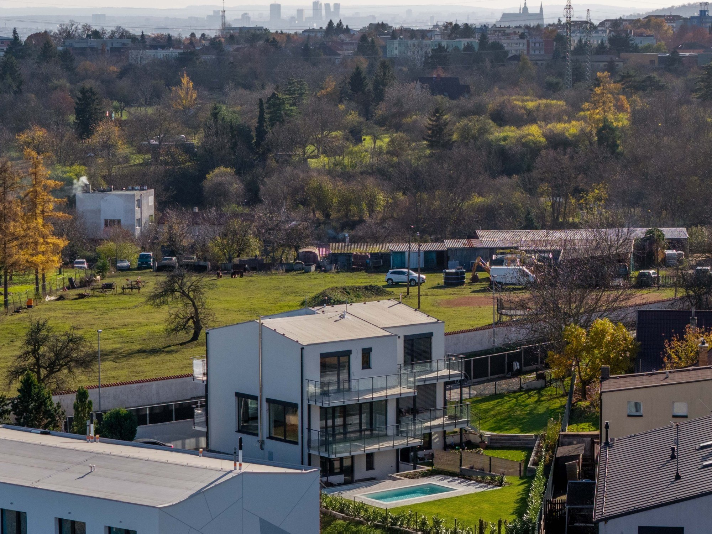
PŘEDPO
Proč: p. Sládek (formulář): „asi ano, ale je to hodně potlačené tím trojdomem, podle mě by to chtělo bližší pohled upravit tu zahrádku u krajového trojdomu...protáhnout linii toho šikmého plotu v její rovině“
Co se změnilo: BLIŽŠÍ POHLED (výřez A): nový výřez z originálu DJI_0724 v plném rozlišení (8056 px), oblast x 1817–6484, y 950–4450 (4667 × 3500 px) zmenšená na 2560 × 1920 – dům B ~1,8× větší, Praha (Pankrác, Hrad) zůstává nahoře, trojdům jen roh střechy vlevo dole. Z originálu je vše kromě 6 zón z 1 generace NB Pro 2K Unlimited (zarovnání 0,96 px, doostřeno na detail originálu): čisté sklo 4 balkonů domu B (bez fólie), bazén s vodou a světlým lemem bez plachty a stavebního pletiva, dlažba, záhon u domu, zahrádka před bazénem místo zarostlého svahu (trávník + nízký živý plot), pás trávníku s keři podél šikmého pletivového plotu vpravo – plot vede rovně ve své linii až k dolnímu okraji. Hnědá zástěna s podezdívkou za bazénem, horní terasy, sousedé a schodiště vlevo z originálu.
Výhrada: Výklad „šikmý plot“ = pletivový plot domu B vpravo, šikmý k domu (podle situace S1B) – POTŘEBA POTVRDIT u p. Sládka. Poklop technické šachty vpravo od bazénu na tomto výřezu chybí (generace ho nahradila dlažbou). Dole podél živého plotu zůstalo pletivo se sloupky (z generace). Boční schodiště vlevo od domu je zatím původní (čeká na render z nového modelu). Malé skleněné výplně na levé straně domu mají ještě fólii (malé, mimo zóny). Po změně výřezu nejde srovnávat pixel s kolem 4 – před/po ukazuje kolo 4 zvětšené na stejný výřez.
P1194790 Bazén a terasy dělal: Opus
PŘEDPO
Proč: p. Sládek (formulář): „Ano, trochu vylepšit trávu, jako na předních pohledech a podle plotu nějakou výsadbu“
Co se změnilo: Ze schválené verze kola 4, jen oblasti změny (Higgsfield NB Pro 2K Unlimited, 1 generace se vzorem nové 0788; zarovnání 0,83 px). Podél levé opěrné zdi stejný záhon jako na 0788 (mulč, okrasné trávy, levandule, buxusové koule), nízko pod hranou zdi. Trávník vlevo v popředí a pás vpravo hustší a zelenější; světlo, stín domu a teplota barvy trávníku převzaty z kola 4. Dům, bazén, dlažba, poklop, lehátka, plot se živým plotem, nebe beze změny (bezeztrátové vložení po blocích JPEG).
Výhrada: Živý plot vpravo z tohoto pohledu vidět není (je za kamerou). Druhý pokus o trávník (p2) zamítnut: přidal svislé pruhy stínů, které ve fotce nejsou. Pás trávníku vpravo je zlepšený jen mírně.
P1194761 Dům od vjezdu se schodištěm dělal: Opus
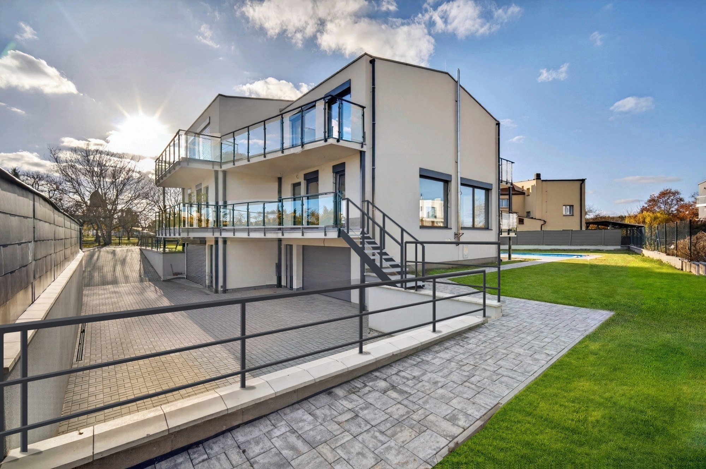
PŘEDPO
Proč: p. Sládek (formulář): „naznačit nízké schodiště? a zábradlí na zídkách-bude muset být...“ · schůdky zatím ne (neznáme výšku dlažby)
Co se změnilo: Varianta A: jednoduché ocelové zábradlí v antracitu (barva podle schodiště domu), bez skla – sloupky 40 mm à ~1,3 m, madlo a 2 vodorovné pásnice. Na přední zídce (horní dlažba → dvůr, po celé viditelné délce) cca 1 m nad horní dlažbou a na bílé zídce u paty schodiště (vyšší pás → dvůr) od paty schodiště po konec zídky. Kresba v perspektivě fotky (kalibrovaná kamera kola 3, svislice svislé, výška oka 1,55 m – odhad), 4× vyhlazené hrany, zrno, kontaktní stín patek; jen pixely zábradlí, zbytek bezeztrátově z kola 4. Schodiště beze změny.
Výhrada: Výška zábradlí je odvozená z odhadu výšky oka (1,55 m) – nejistota ±10 %. Zábradlí je kresba (ploché profily s jednou světlou hranou), při 100 % méně plastické než renderované schodiště. Vlastní stín zábradlí na dlažbu nekreslen (slunce v protisvětle, stín by padal ke kameři – jen kontaktní stín patek). Varianta B se schůdky nevznikla – viz zpráva.
dron_0741 Dům se zahradou z dronu dělal: Opus
PŘEDPO
Proč: Náš návrh: Sládek se k tomuto dronu nevyjádřil – doplněný stejný záhon jako na zahradě s bazénem, ať sada sedí
Co se změnilo: Doplněn stejný záhon jako na 0788/0790: podél paty zídky se živým plotem (hranice zahrady B za lehátky) úzký pás s mulčem, okrasnými travami, levandulí a buxusovými koulemi. 1 generace NB Pro 2K Unlimited jen výřezu 810 × 540 px (zarovnání 0,41 px), vloženo jen v pásu záhonu podle mapy rozdílu (25 700 px, měkký okraj 2 px), bezeztrátově po blocích JPEG – vše ostatní beze změny z kola 4.
Výhrada: Pod živým plotem je nově vidět světlý líc zídky nad záhonem (jako na 0788). Živý plot vpravo z 0788 je z tohoto pohledu zakrytý střechou domu v popředí.
Interiéry podle výkresu 7
P1194937 Obývací prostor – hlavní pohled dělal: Opus
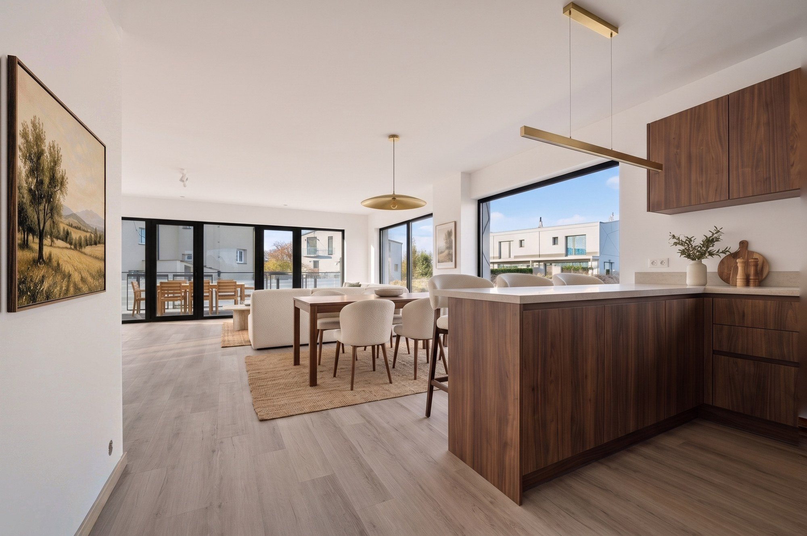
PŘEDPO
Proč: p. Sládek (formulář): „nábytek ( sedací soupravu) uzpůsobit půdorysnému rozmístění z výkresu“ · rozmístění podle jeho náčrtu z WhatsAppu 18. 11. · Franta 18. 11. (oprava): špatný přechod v levé třetině
Co se změnilo: OPRAVA 18. 11. večer (Franta: stůl jinak než chtěl p. Sládek, obrazy, ofoliované zábradlí za okny): jídelní stůl pro 6 nově přesně podle náčrtu – dlouhou stranou napříč záběrem, 3+3 krémové bouclé židle, jutový koberec, mosazné talířové svítidlo nad středem stolu; rohová sedačka podle náčrtu (kratší díl zády k nám) s travertinovým stolkem; kuchyň do L (ořech, světlý kámen, lineární mosazné svítidlo) jako dosud; venku na terase čisté skleněné zábradlí bez fólie a teakový jídelní set (jako exteriér P1194788). Levá stěna s obrazem olivovníku beze změny ze schválené verze. Metoda: nástřel nábytku z 3D modelu (dum_B.blend, nábytek podle náčrtu p. Sládka) vyrenderovaný v Blenderu kalibrovanou kamerou pohledu → 1 generace NB Pro 2K Unlimited z ORIGINÁLU fotky → zarovnání → stavba (schodiště, sklo, okna, stěny) vrácena z originálu Poissonovým napojením.
Výhrada: Stropní bodové svítidlo uprostřed stropu je z generace (místo holého vývodu). Výhled pravým oknem je z generace (soused, živý plot, bez hromady hlíny). Vysoké skříně s lednicí v záběru nejsou (stojí za fotografem). Předchozí verze: viz/kolo6i/_v3_pred_obrazy/.
P1194950 Obývací prostor – ke schodišti dělal: Opus
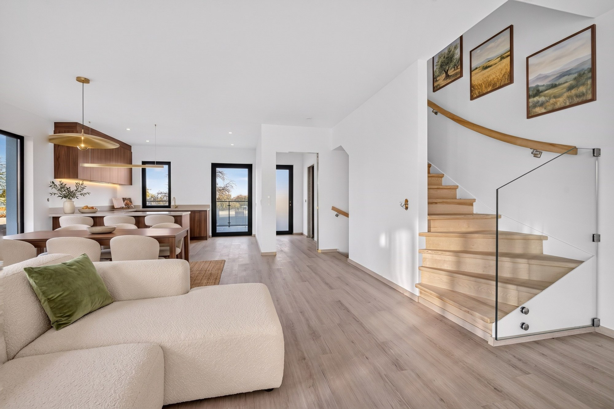
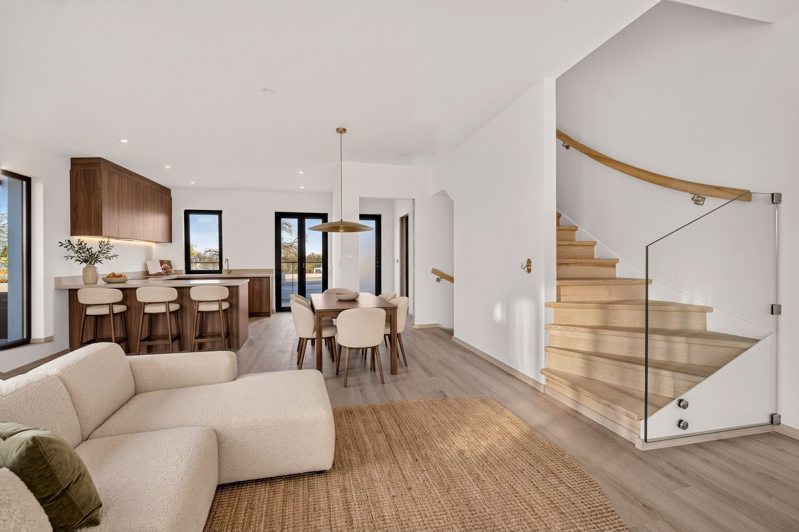
PŘEDPO
Proč: p. Sládek (formulář): „dtto, kuchyň udělat variantně podle výkresu, pokud to lze (líbí se mi víc), osadit posuvné dveře, hodící se k interiéru“ (dtto = sedačku podle půdorysu) · posuvné dveře zatím nevyšly · Franta 18. 11. (oprava): špatný přechod v levé třetině
Co se změnilo: OPRAVA 18. 11. večer (Franta: stůl jinak, prázdné stěny, obraz jen na jednom pohledu): nad schodištěm galerie 3 krajinomaleb v paletě sady (olivovník, zlaté pole, mlžné kopce) v ořechových rámech, stoupající souběžně s madlem nad ním (poloha z 3D modelu); jídelní stůl pro 6 podle náčrtu dlouhou stranou k nám (stejně jako na 4 a 6) se 6 bouclé židlemi; rohová sedačka podle náčrtu v popředí; kuchyň do L s pultem a 3 barovými židlemi; venku za dveřmi čisté skleněné zábradlí. Schodiště, skleněné zábradlí, madlo, stěna u schodiště a levé okno z originálu (obrazy vloženy jen na stěnu nad madlem). Metoda: nástřel nábytku z 3D modelu (dum_B.blend, nábytek podle náčrtu p. Sládka) vyrenderovaný v Blenderu kalibrovanou kamerou pohledu → 1 generace NB Pro 2K Unlimited z ORIGINÁLU fotky → zarovnání → stavba (schodiště, sklo, okna, stěny) vrácena z originálu Poissonovým napojením. 2. pokus (1. měl koberec v popředí a obrazy na madle – zamítnut).
Výhrada: Lehátko rohové sedačky v popředí vychází o ~0,3–0,4 m delší/širší než v náčrtu (generace; v archu modrá čára = náčrt). Obraz s olivovníkem ze stěny zádveří je z tohoto pohledu vidět jen hranou (stěna je téměř v ose pohledu). Posuvné dveře do zádveří stále nejsou. Předchozí verze: viz/kolo6i/_v3_pred_obrazy/.
P1194931 Jídelna a obývací část dělal: Opus
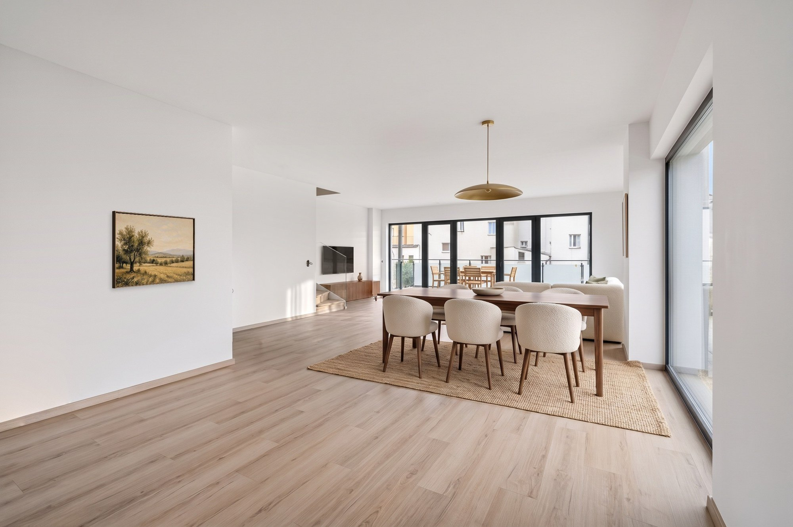
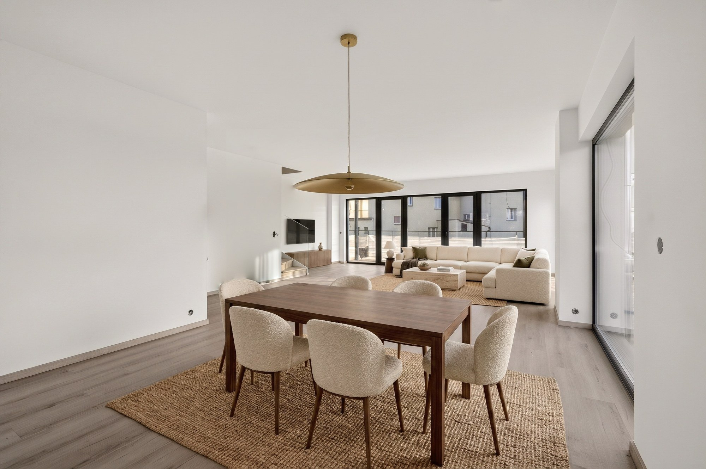
PŘEDPO
Proč: p. Sládek (formulář): „televizi se skříňkou mezi skleněným zábradlím a oknem“ · rozmístění podle jeho náčrtu z WhatsAppu 18. 11. · Franta 18. 11. (oprava): kuchyň úplně špatně + přechod v pravé třetině
Co se změnilo: OPRAVA 18. 11. večer (Franta: gauč špatně, prázdné stěny, obraz má být i tady, ofoliované zábradlí): na levé stěně zádveří STEJNÝ obraz s olivovníkem jako na P1194937 – přenesen z 4 kalibrovanými kamerami (stejné místo, rám, perspektiva); jídelní stůl pro 6 podle náčrtu dlouhou stranou k nám, 3+3 bouclé židle, jutový koberec, mosazné talířové svítidlo; rohová sedačka podle náčrtu u prosklení (stejná jako na 4 a 5); TV na zdi s ořechovou skříňkou mezi skleněným zábradlím a oknem; na terase čisté skleněné zábradlí bez fólie a teakový jídelní set; kuchyň z pohledu není (Franta). Zóna schodiště se sklem, stěna s klikou a otvor ve stropu z originálu, holé žárovky pryč. Metoda: nástřel nábytku z 3D modelu (dum_B.blend, nábytek podle náčrtu p. Sládka) vyrenderovaný v Blenderu kalibrovanou kamerou pohledu → 1 generace NB Pro 2K Unlimited z ORIGINÁLU fotky → zarovnání → stavba (schodiště, sklo, okna, stěny) vrácena z originálu Poissonovým napojením.
Výhrada: Galerie obrazů nad schodištěm z tohoto pohledu není vidět (zakrývá ji stěna u schodiště – podle fotky). Na pilíři vpravo je malý obraz z generace (odpovídá tisku na pilíři z pohledu 4). Předchozí verze: viz/kolo6i/_v3_pred_obrazy/.
P1194836 Ložnice dělal: Opus
PŘEDPO
Proč: p. Sládek (formulář): „na stěnu s koupelnou skříňku s TV“ · rozmístění podle jeho náčrtu z WhatsAppu 18. 11.
Co se změnilo: Na stěnu ke koupelně (vlevo) nízká ořechová skříňka s TV na stěně proti posteli (Sládek). Manželská postel s čalouněným čelem u severní stěny, posunutá blíž k oknu podle výkresu, noční stolky po obou stranách. Záběr = originální fotka (současná verze měla jiný výřez). | BALKON 18. 11. večer (Franta: „na 7, 8 a 9 je to zábradlí nepředělaný … musí být nastageovaný ten balkon a to skleněný zábradlí správně“): ochranná fólie ze skleněného zábradlí odstraněna – čisté sklo mezi antracitovými sloupky s příchytkami a antracitovým madlem (stejný typ jako na exteriérových vizualizacích P1194790/P1194788), pohled skrz sklo do zahrad/krajiny, čistá světle šedá podlaha balkonu, střídmý staging: teaková křesla se světle šedými podsedáky a teakový stolek (jako horní balkon na exteriéru), nízko pod madlem. Metoda: 1 generace NB Pro 2K Unlimited (Higgsfield, 0 kreditů) ze schváleného základu sady, zarovnání na základ homografií (chyba 0,81 px), vložena JEN sklo pod madlem (bez rámů, bez postele a olivovníku) s měkkým okrajem 1,5 px po 16px blocích JPEG – mimo masku beze změny (0 px). Předchozí verze: viz/kolo6i/_v2_pred_dvermi/.
Výhrada: (Fólie na zábradlí balkonu – vyřešeno 18. 11. večer, balkon vyčištěný a nastagovaný.) Vestavěné šatní skříně u příčky (podle výkresu) stojí za fotografem – v záběru nejsou. | Výhled pod madlem (zahrada, keře, spodek sousedního domu) je z generace – v originále ho zakrývala fólie. Dveře v záběru ložnice nejsou (žádná zárubeň není vidět).
P1194864 Pokoj (větší pokoj B2.3, 14,8 m²) dělal: Opus
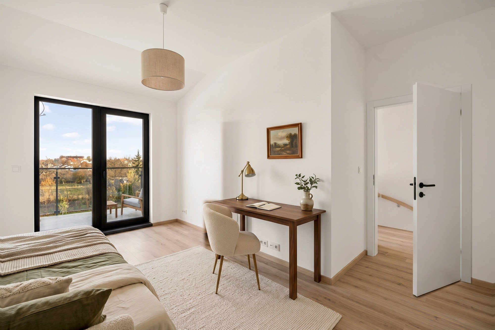
PŘEDPO
Proč: p. Sládek (formulář): „toto vůbec nesouhlasí s výkresem - posílám whatsappem, nemůžu sem přetáhnout screenshot“ · rozmístění podle jeho náčrtu z WhatsAppu 18. 11.
Co se změnilo: Úplně nové rozmístění podle náčrtu p. Sládka: místo manželské postele uprostřed je u příčky k jižnímu pokoji dlouhý psací stůl s křeslem, jednolůžko u severní stěny (v popředí vlevo, ořízlé záběrem). Fotka určena jako pokoj B2.3, focený od severozápadu (od šatních skříní) směrem k jihovýchodu – okno = balkonové dveře na východ, vpravo průchod do chodby se schodištěm. | DVEŘE 18. 11. večer (Franta: „na jedný chybí dveře … vyřeš“): do otvoru do chodby osazeny bílé hladké bezfalcové dveře (plné matné křídlo, skryté závěsy) v bílé obložkové zárubni, pootevřené dovnitř pokoje (~75°, závěsy vpravo – vypínač zůstává u kliky vlevo), černá klika na kulaté rozetě + černá rozeta zámku; kolem otvoru bílý obklad zárubně místo surového ostění s latí. Poloha a perspektiva křídla podle kalibrované kamery (nástřel 80/197 cm, dvere_balkon/upload/P1194864_nastrel_dvere.jpg). | BALKON 18. 11. večer (Franta: „na 7, 8 a 9 je to zábradlí nepředělaný … musí být nastageovaný ten balkon a to skleněný zábradlí správně“): ochranná fólie ze skleněného zábradlí odstraněna – čisté sklo mezi antracitovými sloupky s příchytkami a antracitovým madlem (stejný typ jako na exteriérových vizualizacích P1194790/P1194788), pohled skrz sklo do zahrad/krajiny, čistá světle šedá podlaha balkonu, střídmý staging: teaková křesla se světle šedými podsedáky a teakový stolek (jako horní balkon na exteriéru), nízko pod madlem. Metoda: dveře = 1 generace NB Pro 2K Unlimited ze schváleného základu s nástřelem (zarovnání 0,83 px), vloženy polygony po hranách zárubně a křídla; balkon = 2. generace jen výřezu okna (1. generace nechala na skle šedé pruhy jako fólie; zarovnání 0,61 px), vloženo sklo pod madlem. Měkký okraj 1,5 px, po 16px blocích JPEG, mimo masku beze změny. Předchozí verze: viz/kolo6i/_v2_pred_dvermi/.
Výhrada: Šatní skříně u příčky k ložnici a skříň v SV rohu stojí podle výkresu mimo záběr (za fotografem / u levého okraje), proto v obraze nejsou; skříň, kterou generace dala do JV rohu, byla druhou úpravou odstraněna. Výstupek stěny je ve fotce ~0,9 m západněji než v modelu (DWG) – stůl je osazený od výstupku jako v náčrtu. | Výhled pod madlem (louka, keře) je z generace – v originále ho zakrývala fólie; svislá bílá tyč za fólií zmizela. Na horní hraně volného konce křídla je drobný schod (pár px, jen při 100 %). V zámku je klíč (z generace). V chodbě za dveřmi křídlo zakrývá bílou zídku schodiště, madlo schodiště zůstává vidět.
P1194886 Pokoj s výhledem (menší pokoj B2.2, 9,6 m²) dělal: Opus
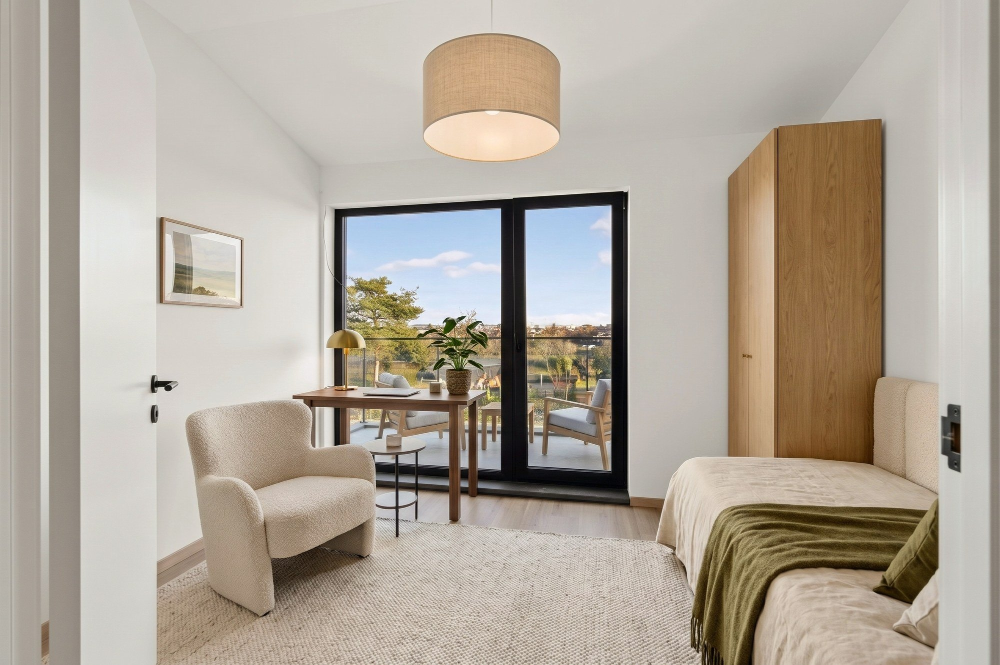
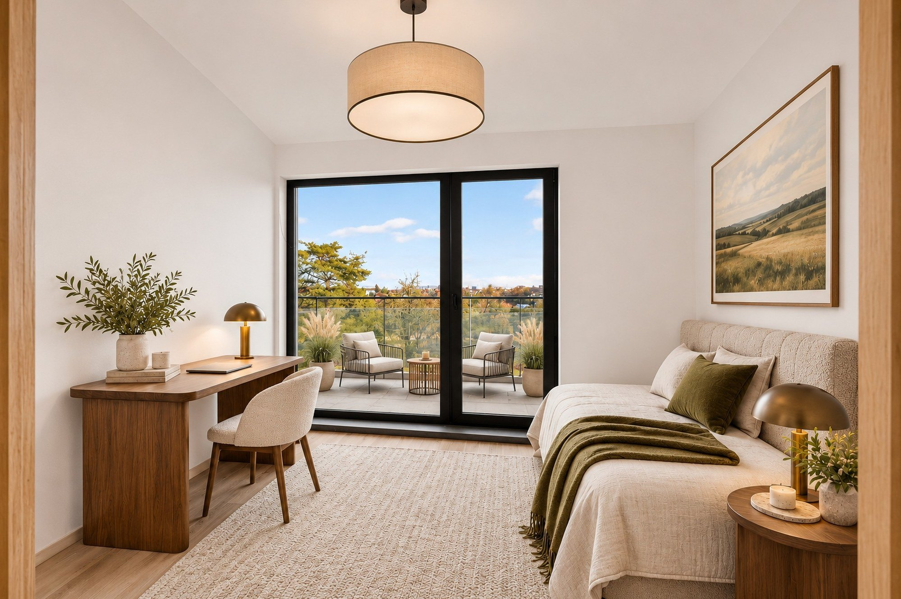
PŘEDPO
Proč: p. Sládek (formulář): „dtto“ (= nesouhlasí s výkresem) · rozmístění podle jeho náčrtu z WhatsAppu 18. 11.
Co se změnilo: Nábytek podle náčrtu p. Sládka: jednolůžko podél jižní stěny (vpravo), vysoká skříň v rohu u okna, psací stůl před levou částí balkonových dveří, křeslo se stolkem. Dříve byla postel u levé stěny a stůl jinde. Fotka určena jako pokoj B2.2, focená ze dveří od chodby (západ) k východnímu oknu. | DVEŘE 18. 11. večer (Franta: „na druhý jsou vidět futra bez dveří z obou stranách … vyřeš“): fotka je focená ze dveří – surová ostění na obou okrajích (omítka, holé cihly) nahrazena bílou obložkovou zárubní; vlevo bílé hladké bezfalcové křídlo otevřené dovnitř pokoje k levé stěně (černá klika na kulaté rozetě + rozeta zámku, stejné kování jako P1194864), vpravo na zárubni černý protiplech zámku. | BALKON 18. 11. večer (Franta: „na 7, 8 a 9 je to zábradlí nepředělaný … musí být nastageovaný ten balkon a to skleněný zábradlí správně“): ochranná fólie ze skleněného zábradlí odstraněna – čisté sklo mezi antracitovými sloupky s příchytkami a antracitovým madlem (stejný typ jako na exteriérových vizualizacích P1194790/P1194788), pohled skrz sklo do zahrad/krajiny, čistá světle šedá podlaha balkonu, střídmý staging: teaková křesla se světle šedými podsedáky a teakový stolek (jako horní balkon na exteriéru), nízko pod madlem. Žebříky z balkonu pryč. Metoda: 1 generace NB Pro 2K Unlimited (Higgsfield, 0 kreditů) ze schváleného základu sady, zarovnání na základ homografií (chyba 0,84 px), vložena JEN zárubeň + křídlo (polygony po hranách) a sklo pod madlem (bez rámů a bez nábytku v interiéru) s měkkým okrajem 1,5 px po 16px blocích JPEG – mimo masku beze změny (0 px). Předchozí verze: viz/kolo6i/_v2_pred_dvermi/.
Výhrada: 1. generace prohodila postel a skříň – použita 2. generace s přesným popisem. Ořechový stůl je užší (cca 1,2 m) než v náčrtu (0,56 × 1,20 m – sedí). (Surová ostění dveří na krajích záběru – vyřešeno 18. 11. večer zárubní a křídlem.) | Křídlo vlevo sahá k hornímu okraji snímku, jeho horní hrana splývá se šikmým podhledem (kamera stojí v ostění, geometrie přibližná). Výhled pod madlem (zahrada se stromy) je z generace – v originále fólie; za květináčem je drobný oranžový předmět na sousední zahradě (z generace, cca 60 × 50 px). Červená lemovka u paty zábradlí z originálu zmizela.
P1184133 Garsonka u terasy dělal: Opus
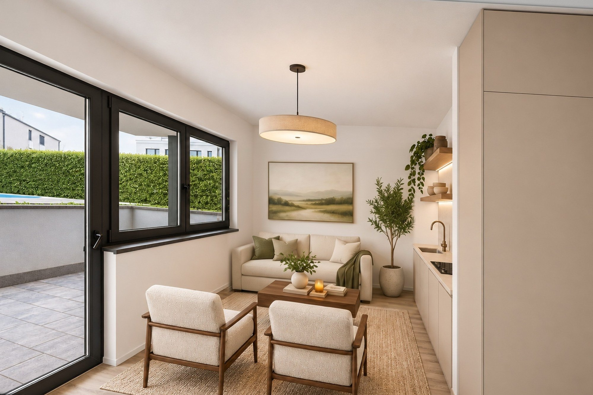
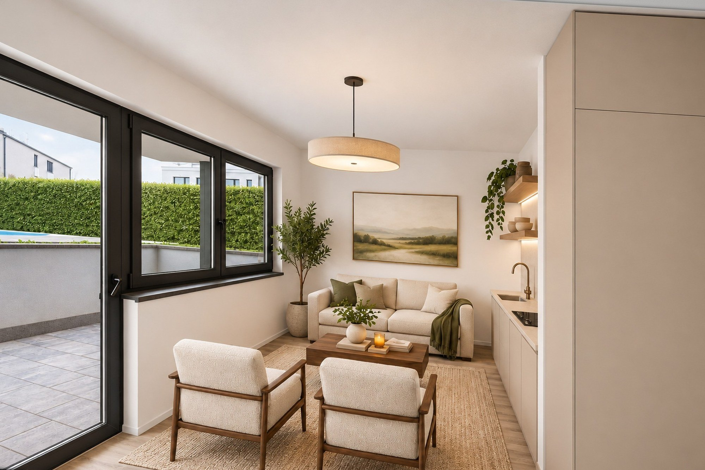
PŘEDPO
Proč: p. Sládek (formulář): „asi jen sedačku odsunout od kuch linky...“
Co se změnilo: Pohovka posunuta do levého rohu u okna, mezi ní a kuchyňskou linkou je volný pruh stěny (~0,8 m) s olivovníkem; obraz posunut nad pohovku. Vše ostatní (křesla, stolek, linka, skříň přes bojler, výhled na živý plot) beze změny ze schválené verze.
Výhrada: Upraveno přestylováním schválené vizualizace (3. pokus; z prázdné fotky generátor pohovku od linky neodsunul a ztratil živý plot ve výhledu). Mimo zónu zadní stěny jsou pixely ze schválené verze. Pohovka je kompaktnější (dvoused ~1,6 m).
3D model, půdorysy a pohledy 13
pudorys_1PP pudorys_1PP dělal: Opus
PŘEDPO
Proč: p. Sládek (formulář): „rozměry dtto jako v přízemí, kotel, bojler podle fotek, pokud bude TČ, přibude ještě akumulační nádrž (jako bojler)“
Co se změnilo: rozměry a dispozice podle DWG (10,110 × 6,770 m), stěny a dveře z DWG; technická nika s kotlem v SZ rohu garáže (DWG = fotky); schodiště v pásu u středové stěny; sanita podle fotek
pudorys_1NP pudorys_1NP dělal: Opus
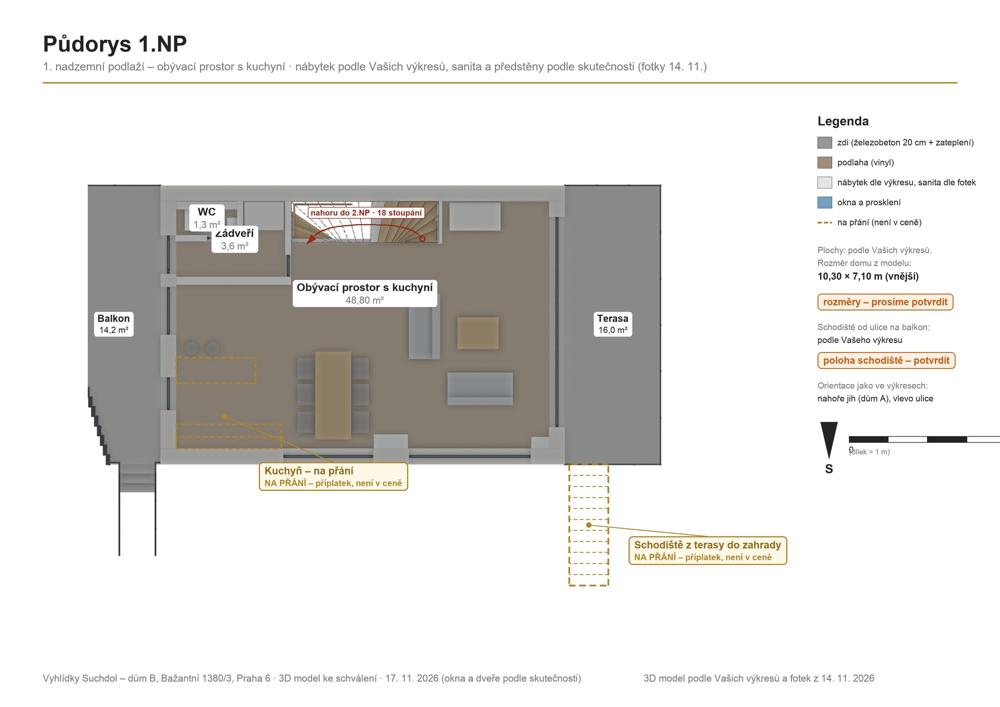
PŘEDPO
Proč: p. Sládek (formulář): „půdorysný rozměr bytu je 10,110m x6,770m ( vnější obrys na osu středové stěny)
boční schodiště k bazénu otočit o 90st směrěm k bazénu a s podestou...obývák s kuchyní 48,5m2, WC 1,4m2, zádveří 3,7m2, terasa do ulice-šikmá 14,5m2“ · nábytek podle jeho náčrtu z WhatsAppu
Co se změnilo: rozměry podle DWG, obývák 48,3 m² (Sládek 48,5), WC 1,41, zádveří; nábytek podle Vašeho náčrtu „nábytek“ (WhatsApp 18. 11.): rohová sedačka u okna do zahrady s konferenčním stolkem, jídelní stůl pro 6, TV se skříňkou mezi skleněným zábradlím a oknem, kuchyň do L s barovým pultem a 3 barovými židlemi (kuchyň na přání – čárkovaně); šikmá terasa 14,5 m²; schodiště do zahrady na přání otočené podél domu (čárkovaně)
pudorys_2NP pudorys_2NP dělal: Opus
PŘEDPO
Proč: p. Sládek (formulář): „balkon do ulice 14,5m2, větší pokoj14,8m2, chodba 6m2, balkon 11,4m2, nabytek OK, jen do ložnice bych dal TV se skřínkou na stěnu ke koupelně“
Co se změnilo: obvod, koupelna, chodba a jižní pokoj podle DWG; větší pokoj 14,8 a šatní skříně podle screenshotu „nábytek“; nábytek podle screenshotu; v ložnici TV se skříňkou na stěně ke koupelně; balkony 14,5 / 11,4
pohledy pohledy dělal: Opus
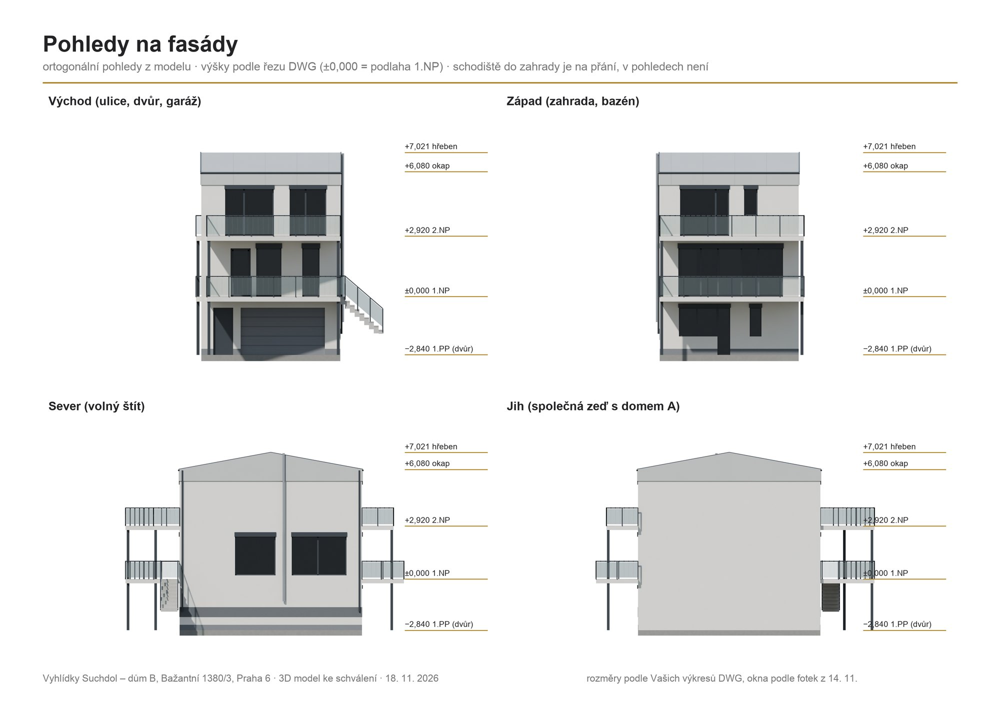
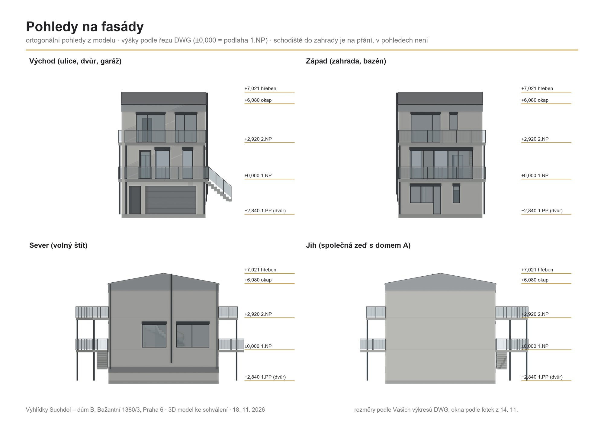
PŘEDPO
Proč: p. Sládek (formulář): „schodiště vlevo asi vypustit, bude za příplatek, jinak OK, ty sloupy uprostřed na východním pohledu odstranit, na severním pohledu odstranit prostřední sloup“
Co se změnilo: 18. 11. večer: fasády s materiály podle skutečného domu (bílá omítka, tmavý sokl, antracitová okna a zábradlí se sklem, šedá vrata, světlá střecha), stíny balkonů pod 45°; výškové kóty a popisky beze změny; dřív v tomto kole (proti 17. 11.): výšky podle řezu DWG (−2,840 / ±0,000 / +2,920 / okap +6,080 / hřeben +7,021); boční schodiště (na přání) z pohledů vypuštěno; prostřední sloupy pryč (východ, sever); okna podle fotek/DWG
axonometrie axonometrie dělal: Opus
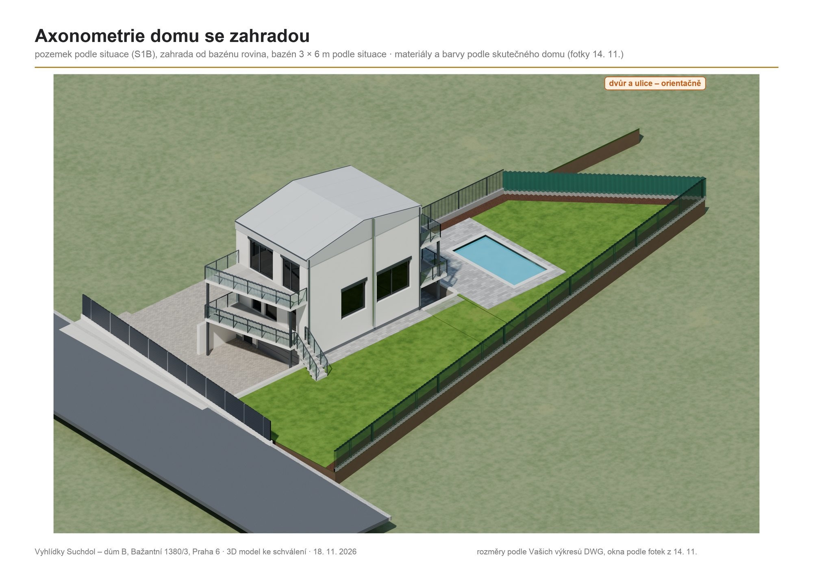
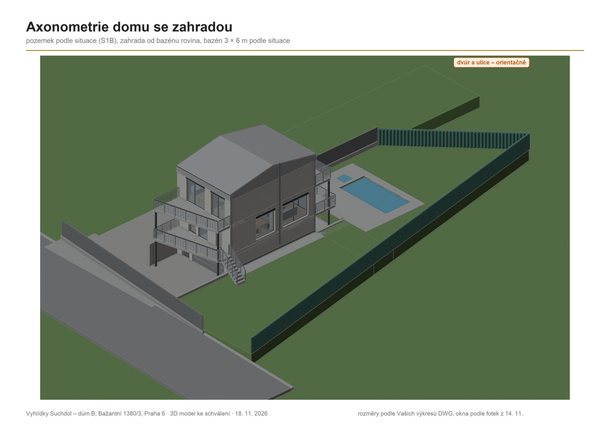
PŘEDPO
Proč: p. Sládek (formulář): „nesouhlasí dvůr se situací, od bazénu je rovina, ne svah, pravý plot je víc šikmý vůči domu (viz situace), sloupy uprostřed balkonů odstranit“
Co se změnilo: 18. 11. večer: materiály a světlo podle skutečného domu (fotky a drony 14. 11.): bílá omítka, tmavě šedý sokl, antracitové rámy oken, žaluziové boxy, sloupy, svody a zábradlí se skleněnou výplní, světle šedá fólie na střeše, šedá melírovaná zámková dlažba, balkony s velkoformátovou dlažbou, sekční vrata, plot do ulice z antracitových panelů na bílé podezdívce, zelené pletivo a zelená tkanina na plotech do zahrady, antracitové panely k domu A, opěrné zídky s krycími deskami, tyrkysový bazén, skutečný trávník a pásy tmavé kůry podél plotů jako na vizualizacích; měkké denní světlo (Cycles); geometrie beze změny; dřív v tomto kole (proti 17. 11.): zahrada od bazénu rovina (bez svahu); severní plot šikmo podle situace S1B; tvar pozemku a bazén podle situace; prostřední sloup balkonů pryč
rozlozena_podlazi rozlozena_podlazi dělal: Opus
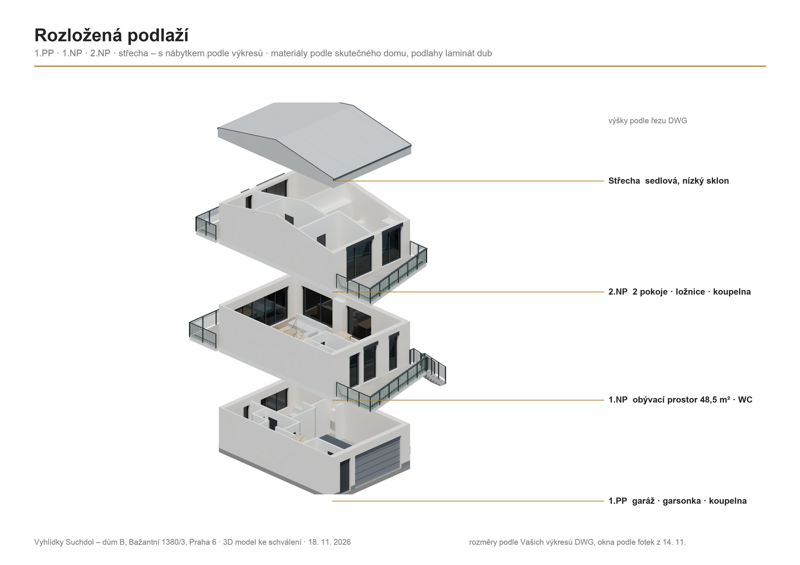
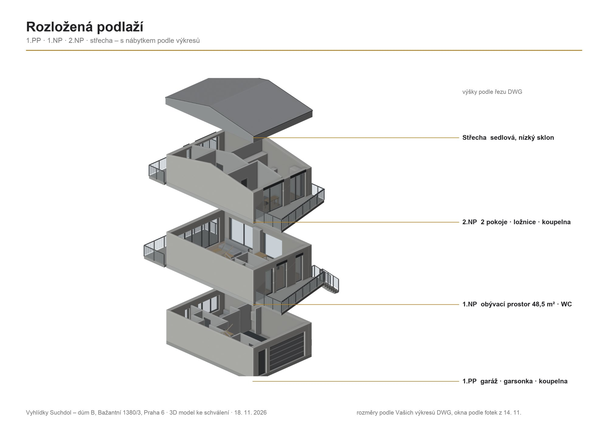
PŘEDPO
Proč: p. Sládek: „Souhlasí“ – změna jen kvůli rozměrům z jeho výkresů DWG (17.–18. 11.)
Co se změnilo: 18. 11. večer: stejné materiály jako axonometrie; uvnitř podlahy laminát dub (šedohnědý jako na fotkách), koupelny a WC šedá dlažba, bílé stěny, nábytek beze změny; každé podlaží nasvícené zvlášť, aby horní deska nestínila do pokojů; geometrie beze změny; dřív v tomto kole (proti 17. 11.): podlaží v nových rozměrech a výškách, 2.NP s novou dispozicí a nábytkem, 1.NP s nábytkem podle Vašeho náčrtu (rohová sedačka, stůl pro 6, barové židle)
rez_v_cene rez_v_cene dělal: Opus
PŘEDPO
Proč: p. Sládek (formulář): „plynový kotel není primárně záložní zdroj, je hlavní topné méedium, záložním zdrojem se stane pouze po instalaci TČ, rekuperační jednotka je umístěna ve výklenku v garáži (viz výkres), Loxone inteligentní domácnost v ceně v základním provedení-světla, ext. žaluzie ( pokud budou objednány), garážová vrata, vrátný k vrátkům ) detailní popis je na webu: vyhlidkysuchdol.cz - nadstavby dle přání za příplatky, Akumulační baterie není písečná, ale písková!!! Skládá se z hustého potrubí naplněného vodou, umístěného v pískovm loži, které je obaleno tepelnou izolací - bude aktivována pouze po instalaci fotovoltaiky avyužívána pro ekonomičtější ohřev TUV, zateplení -16 cm šedý fasádní polystyren,“
Co se změnilo: texty: plynový kotel = hlavní zdroj (záložní až po TČ); podzemní akumulační nádrž pod podlahou 1.PP (místo „písečná baterie“); rekuperace ve výklenku garáže; Loxone v ceně (světla, vrata, vrátný); zateplení 16 cm šedý EPS
v_cene v_cene dělal: Opus
PŘEDPO
Proč: p. Sládek (formulář): „dtto jako v řezu“ (= jako v řezu)
Co se změnilo: stejné texty jako řez; nádrž, kotel, rekuperace a bojler podle DWG/fotek
na_prani_zahrada na_prani_zahrada dělal: Opus
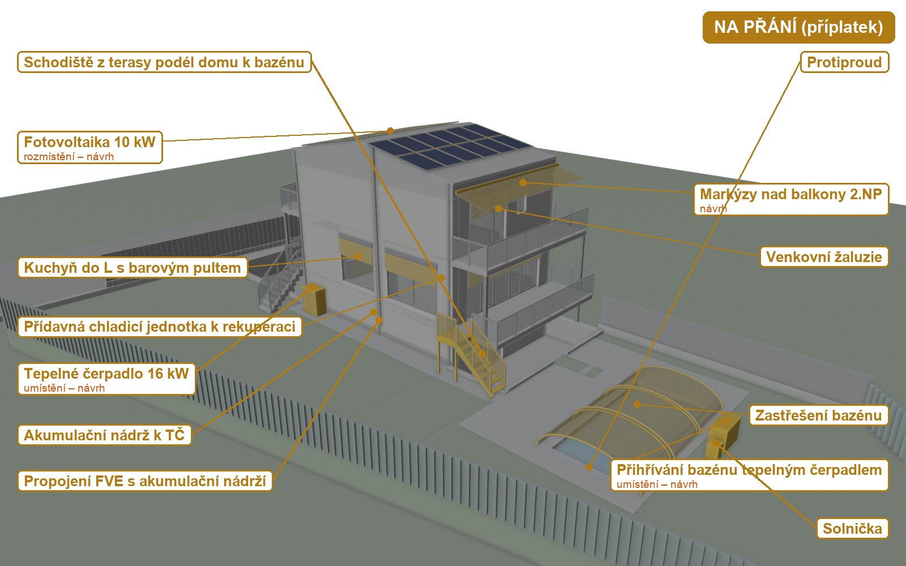
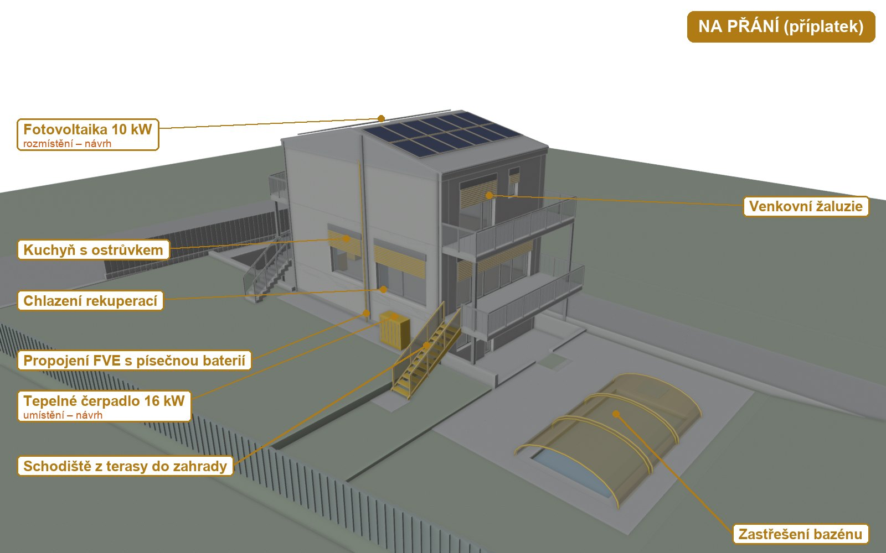
PŘEDPO
Proč: p. Sládek (formulář): „přihřávání bazénu TČ, solnička, protiproud, schidště do zahrady otočit o 90 st směrem k bazénu (viz výkres¨), přídavná chladící jednotka k rekuperaci, propojení FVE s pískovou baterií, markýzy nad balkóny v 2.np“
Co se změnilo: schodiště podél domu s podestou; nově přihřívání bazénu TČ, solnička, protiproud, přídavná chladicí jednotka, markýzy nad balkony 2.NP, akumulační nádrž k TČ
na_prani_ulice na_prani_ulice dělal: Opus
PŘEDPO
Proč: p. Sládek: „dtto“ (jako zahrada) · p. Sládek (formulář): „přihřávání bazénu TČ, solnička, protiproud, schidště do zahrady otočit o 90 st směrem k bazénu (viz výkres¨), přídavná chladící jednotka k rekuperaci, propojení FVE s pískovou baterií, markýzy nad balkóny v 2.np“
Co se změnilo: stejné doplňky jako zahrada (pohled od ulice); TČ podle DWG u severní fasády
glb_poster glb_poster dělal: Opus
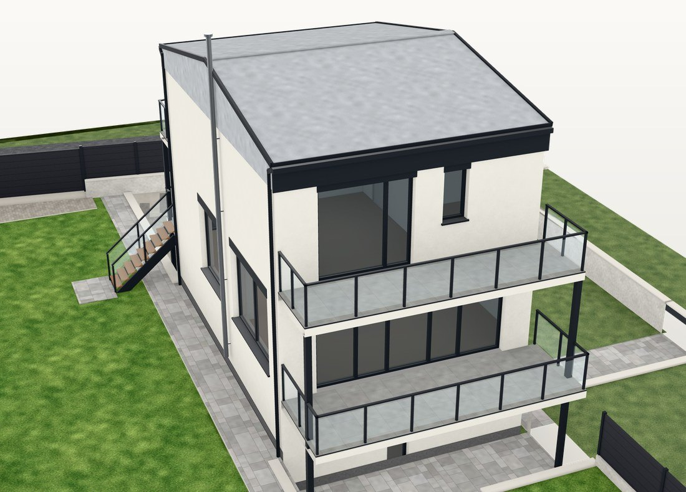
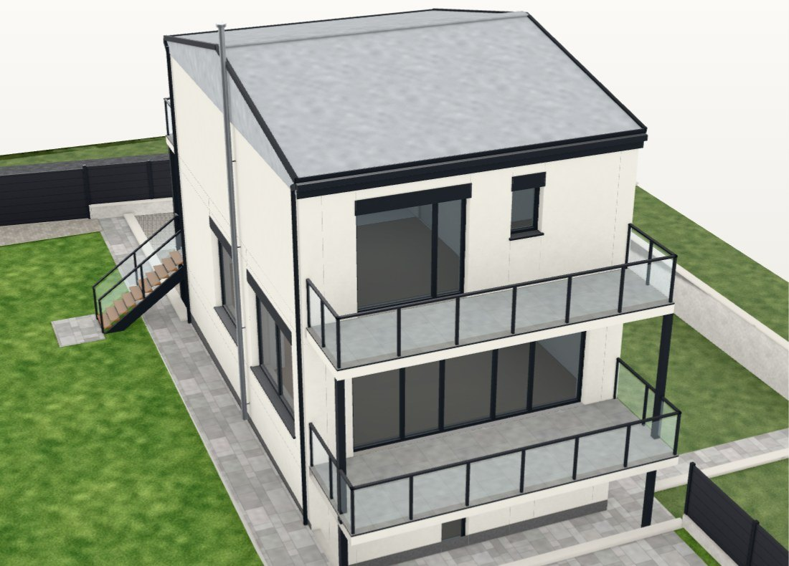
PŘEDPO
Proč: Náš krok: model přestavěný podle DWG výkresů p. Sládka (skutečné provedení, řez, situace)
Co se změnilo: otáčecí 3D model pro web (GLB ×4 přegenerováno): nové rozměry, výšky, prostřední sloupy pryč, zahrada rovná, plot a bazén podle situace
konfigurator_zahrada_schodiste konfigurator_zahrada_schodiste dělal: Opus
PŘEDPO
Proč: p. Sládek (formulář): „přihřávání bazénu TČ, solnička, protiproud, schidště do zahrady otočit o 90 st směrem k bazénu (viz výkres¨), přídavná chladící jednotka k rekuperaci, propojení FVE s pískovou baterií, markýzy nad balkóny v 2.np“ · Franta z telefonu: schodiště natočit podél domu, ne ven
Co se změnilo: vrstva konfigurátoru „schodiště do zahrady“: podesta + rameno podél domu k bazénu (dřív ze severního konce terasy rovně ven)
konfigurator_rez_zaklad konfigurator_rez_zaklad dělal: Opus
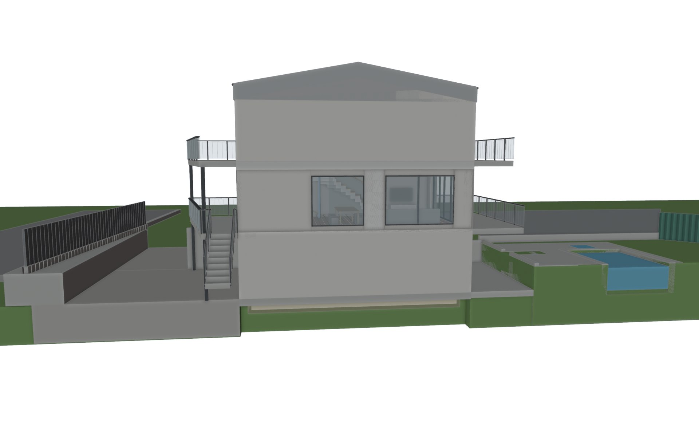
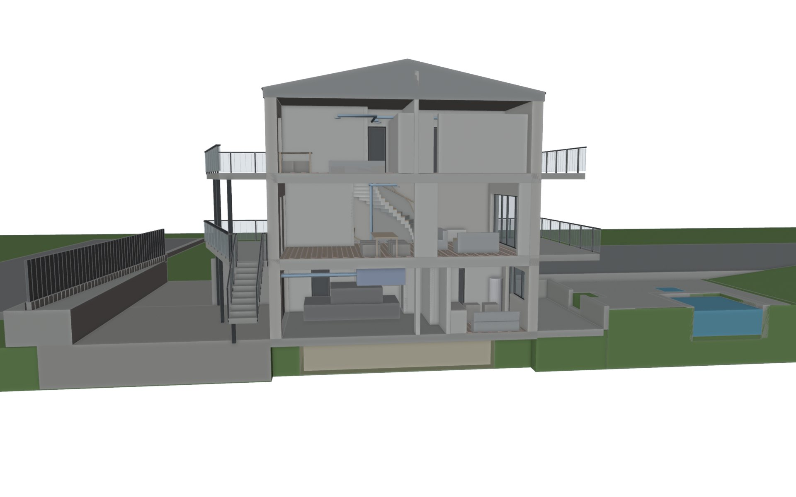
PŘEDPO
Proč: p. Sládek (formulář): „plynový kotel není primárně záložní zdroj, je hlavní topné méedium, záložním zdrojem se stane pouze po instalaci TČ, rekuperační jednotka je umístěna ve výklenku v garáži (viz výkres), Loxone inteligentní domácnost v ceně v základním provedení-světla, ext. žaluzie ( pokud budou objednány), garážová vrata, vrátný k vrátkům ) detailní popis je na webu: vyhlidkysuchdol.cz - nadstavby dle přání za příplatky, Akumulační baterie není písečná, ale písková!!! Skládá se z hustého potrubí naplněného vodou, umístěného v pískovm loži, které je obaleno tepelnou izolací - bude aktivována pouze po instalaci fotovoltaiky avyužívána pro ekonomičtější ohřev TUV, zateplení -16 cm šedý fasádní polystyren,“
Co se změnilo: řez konfigurátoru: nové výšky, podzemní akumulační nádrž pod podlahou 1.PP, sauna mimo niku s kotlem